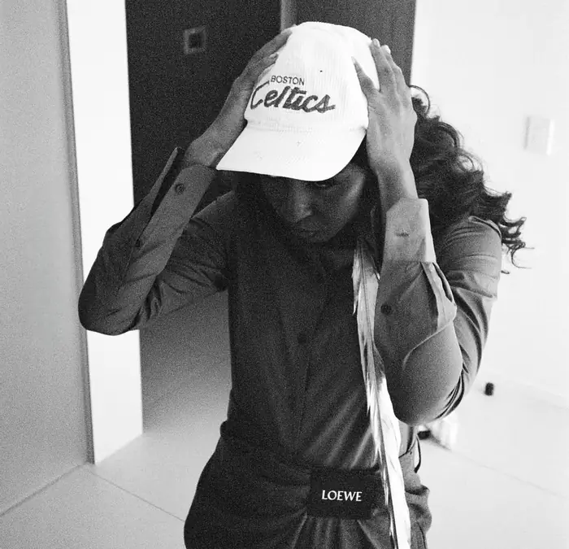
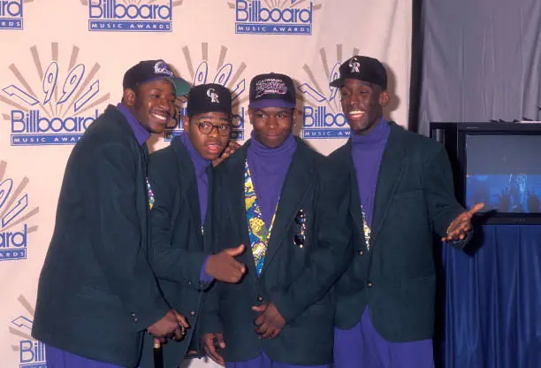
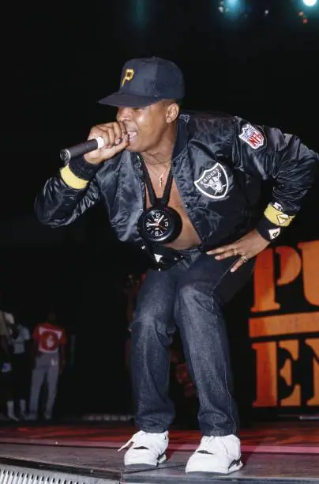
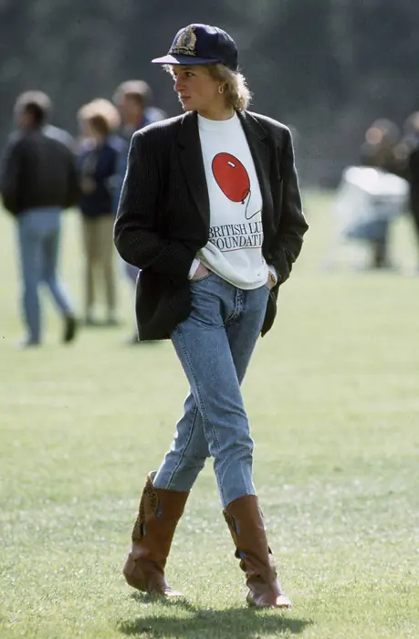
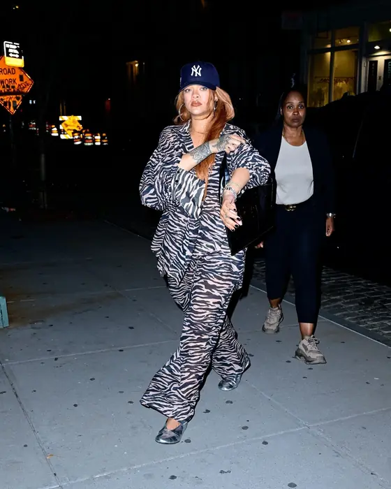
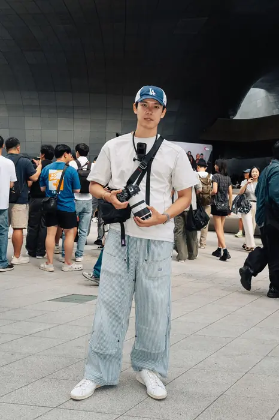

À regarder. la casquette, sa forme et son état
- casquette des Yankees de New York portée visière vers la nuquerouge
- vêtements de scène larges
Voilà le contre-exemple du livre. Durst avait acheté cette casquette rouge sans y penser, comme un porte-bonheur. Il la portait visière vers la nuque. Un clip passé en boucle sur MTV en a fait l’uniforme de toute une foule. Il en parle aujourd’hui comme d’un costume de clown : le public ne veut plus le voir autrement. Le vêtement est devenu une panoplie.
Fred Durst, chanteur du groupe américain Limp Bizkit · diffusion en boucle sur MTV, épisode raconté par Durst à Metal Hammer · 1999, année du clip de « Nookie » · Loudwire, citant Metal Hammer
À regarder. la casquette, sa forme et son état
- tenue complète d’une seule marquePolo Ralph Lauren
- casquette de baseball de la ligne sport de la même marquePolo Sport ou Sportsman
Tout vient de la même marque, des pieds à la tête, casquette comprise. La casquette n’ajoute donc rien à la forme de la tenue. Elle prolonge un nom déjà présent partout ailleurs. C’est le premier degré : on porte un logo, pas un dessin.
Jonathan Edwards, du compte Milan Style, photographié par Jamie Ferguson pour son livre de portraits This Guy · portrait de rue · photographie citée le 11 avril 2020 · Die, Workwear!

degré 2Choisir l’emblème d’une ville où l’on a vécu, et n’en mettre qu’un seul dans la tenue.
janvier 2025
À regarder. la casquette, sa forme et son état, puis les bords côtes du blouson, au col, aux poignets et à la taille
- costume à l’aplomb relâchégrisLoewe
- longue cravate-plume doréedoré, plumeLoewe
- casquette brodée « Boston Celtics »velours côtelé
La casquette dit Boston, et Edebiri a grandi à Dorchester, dans cette ville. L’emblème n’est pas là pour décorer. Il ramène une part de sa vie sur un costume de créateur. La tenue tient au deuxième degré : une seule pièce nomme une équipe, et ni le costume gris ni la cravate dorée ne renvoient au sport.
Ayo Edebiri, actrice américaine qui a grandi à Dorchester, dans le Massachusetts · coulisses d’une remise de prix puis soirée qui la suivait, rapporté par la lettre NEVERWORNS · janvier 2025 · NEVERWORNS, lettre de Liana Satenstein

À regarder. la casquette, sa forme et son état
- blazer de coupe stricte
- casquette de baseball
Les quatre chanteurs montaient sur scène en blazer boutonné et casquette. La décennie suivante a repris l’association sans savoir d’où elle venait. David Letterman faisait la même chose au même moment sur son plateau. La contradiction est le sujet. Le blazer fait oublier qu’il s’agit de très jeunes gens. La casquette le rappelle aussitôt.
les quatre chanteurs du groupe américain Boyz II Men, originaires de Philadelphie · scènes et plateaux de télévision, rappelé par la lettre NEVERWORNS · années 1990, sujet d’un article de GQ signé Jason Diamond · NEVERWORNS, lettre de Liana Satenstein, citant un article de Jason Diamond pour GQ

À regarder. la casquette, sa forme et son état, puis le lettrage sur la poitrine, et la façon dont il est posé
- casquette ajustée des Pirates de Pittsburgh, équipe dont il n’était pas supporter, retenue pour son noir et son lettrage dorénoir et orNew Era, modèle 59FIFTY
- vestiaire de scène sombrenoir
Chuck D ne suivait pas les Pirates de Pittsburgh et ne le cachait pas. Il a choisi cette casquette pour son noir et pour le dessin doré des lettres, comme on choisit une cravate. Toute une génération s’en est servie de la même façon. La casquette a d’abord été une pièce graphique, et seulement ensuite une pièce d’appartenance. L’ordre s’est inversé dans les esprits par la suite.
Chuck D, chanteur du groupe américain Public Enemy, originaire de Long Island · New York, scènes et photographies de presse, analysé par Shakeia Taylor pour FanGraphs · fin des années 1980 · FanGraphs, article de Shakeia Taylor

À regarder. la casquette, sa forme et son état
- sweat-shirt aux couleurs de la British Lung Foundationmolleton
- blazer porté par-dessus
- casquette de baseball
- bottescuir
Diana porte un sweat-shirt d’association caritative et jette un blazer par-dessus. Le blazer n’est pas ajusté. On l’a simplement enfilé sur le reste. La casquette passe grâce à lui. Une seule pièce taillée suffit à tenir le reste : le sweat-shirt, la casquette, les bottes.
Diana, princesse de Galles · Londres, photographie de presse · sélection de looks publiée le 18 juin 2024 · Yahoo Entertainment, article d’Abbey Bender
À regarder. la casquette, sa forme et son état
- blouson de cuircuir
- haut court
- pantalon à taille élastiquenoir
- sandales plates à entre-doigtThe Row
- casquette des Yankees de New York
Personne ne lui demandera si elle soutient les Yankees. La rédactrice qui commente l’image insiste là-dessus. L’emblème a cessé depuis longtemps de désigner une équipe, il ne désigne plus qu’un dessin. Elle le porte à Los Angeles, à l’autre bout du pays. Il ne reste qu’une tache sombre au sommet d’une tenue souple, entre un blouson de cuir et des sandales plates.
Hailey Bieber, mannequin et fondatrice de marque américaine · Los Angeles, photographiée dans la rue et commentée par Who What Wear · octobre 2025, relevé publié le 15 · Who What Wear, article d’Allyson Payer
À regarder. la casquette, sa forme et son état, puis le lettrage sur la poitrine, et la façon dont il est posé
- casquette ajustée des White Sox de Chicago, au lettrage gothiquenoir à lettres blanches
- vestiaire monochrome, choisi pour ne signaler aucune affiliationnoir
Ice Cube n’a choisi cette casquette ni pour l’équipe ni pour le dessin. À Los Angeles, au début des années 1990, porter les mauvaises couleurs dans la rue coûtait cher. Les White Sox venaient de passer au noir, avec un lettrage blanc, et leur casquette ne rattachait personne à un camp. C’était la seule neutre. L’emblème a été retenu pour ce qu’il ne disait pas.
Ice Cube, rappeur et acteur américain, membre fondateur du groupe N.W.A · Los Angeles, couvertures de magazines et pochettes, analysé par Shakeia Taylor pour FanGraphs · début des années 1990, après le changement d’identité des White Sox en 1990 · FanGraphs, article de Shakeia Taylor
À regarder. la casquette, sa forme et son état
- smoking
- casquette ajustée des Yankees de New York
Jabari Evans enseigne les questions de race et de médias à l’université de Caroline du Sud. Il résume l’apport de Jay-Z en une phrase : c’est lui qui a rendu possible le smoking porté avec une casquette ajustée des Yankees. Le parcours de l’homme dit la même chose. En 1996, il se cachait sous un feutre et une écharpe de parrain. Dix ans plus tard, il reparaît en casquette, au moment où il lui faut redevenir accessible.
Jay-Z, rappeur et homme d’affaires américain originaire de Brooklyn · New York, pratique décrite par Jabari Evans à MLB.com et pochette de l’album Kingdom Come relevée par le Smithsonian Magazine · des années 1990 aux années 2000, la bascule étant datée de 2006 par le Smithsonian · MLB.com, propos de Jabari Evans, et Smithsonian Magazine, article de John Lingan
À regarder. la casquette, sa forme et son état
- veste courteMiu Miu
- sac porté à l’épauleChanel
- baskets de tennis bassescuirAutry
- casquette de baseball d’une équipe de la ligue majeure
Who What Wear range cette tenue dans une série où revient toujours la même équation. Une casquette d’équipe se pose sur des pièces de grande maison qui, seules, seraient trop lisses. La veste vient de Miu Miu, le sac de Chanel. La casquette tient le rôle que tenait autrefois le sac de toile au milieu des accessoires de cuir. C’est la seule pièce qu’on puisse abîmer sans y penser.
Jessica Alba, actrice et cheffe d’entreprise américaine · photographiée dans la rue, sélection de Who What Wear · relevé publié le 15 octobre 2025 · Who What Wear, article d’Allyson Payer
À regarder. la casquette, sa forme et son état, puis le maillot boutonné, porté comme troisième pièce
- casquette ajustée des Mariners de Seattle, portée visière vers la nuquemarine
- maillot d’équipe
- chaîne d’oror, or
Le geste le plus copié du sport américain n’était pas un geste. Enfant, Griffey voulait porter la casquette de son père, joueur lui aussi. Elle était trop grande. Il la retournait pour qu’elle tienne sur sa tête. Il explique aujourd’hui qu’il continue parce que, dans l’autre sens, cela ne lui paraît juste ni à voir ni à sentir. Voilà ce qui sépare une habitude d’un style.
Ken Griffey Jr., voltigeur des Mariners de Seattle, membre du Temple de la renommée · Seattle, sur le terrain et hors du terrain, propos tenus au podcast The Pivot et rapportés par OutKick · de 1989 à 1999 pour la période la plus imitée, explication donnée en octobre 2022 · OutKick, article de Mike Gunzelman, d’après le podcast The Pivot
À regarder. la casquette, sa forme et son état
- casquette des Dodgers de Los Angeles, calotte souple et sangle de réglagebleu’47, modèle Clean Up
- pantalon fluide à jambe largeThe Row, modèle Eglitta
- sacThe Row
- sandalesThe Row
La casquette vaut trente fois moins cher que le pantalon. C’est ce qui fait l’image : une casquette de supermarché posée sur la maison la plus austère de New York. Le modèle n’est pas la calotte rigide des joueurs. C’est la version molle, réglée par une sangle à l’arrière, celle qui se plie dans une poche. Le pantalon de The Row reste impeccable pendant que la casquette s’affaisse.
Kendall Jenner, mannequin américaine · photographiée dans la rue, sélection de Who What Wear · relevé publié le 15 octobre 2025 · Who What Wear, article d’Allyson Payer
degré 2Laisser une seule pièce molle et de travers au milieu d’une tenue entièrement construite.
1980
À regarder. la casquette, sa forme et son état
- costume de coupe nettenoir
- chemise de smoking empeséeblanc
- nœud papillonblanc
- pantalon à taille hautenoir
- casquette des Yankees molle et aplatie, posée de traversmarine
Tout est construit dans cette tenue : la veste noire nette, la chemise de smoking empesée, le nœud papillon blanc. Une seule pièce échappe à la règle. La casquette des Yankees est molle, aplatie, posée de travers. La couleur n’y est pour rien, le marine va très bien avec le noir. C’est la casquette qui ne se tient pas droite, quand tout le reste se tient.
Lauren Hutton, mannequin et actrice américaine · défilé Armani au Rockefeller Center, New York · 1980 · NEVERWORNS, lettre de Liana Satenstein
À regarder. la casquette, sa forme et son état, puis le pantalon clair, qui accepte la salissure
- casquette à calotte droite et plate, quatre bandes horizontales, lettre brodée sur le devant, portée par-dessus un foulardjaune d’or, bandes noires, foulard bleu à motif cachemire, laine
- veste croisée à deux rangs de boutons, revers larges, épaule tombanteécru, lin
- chemise à col ouvert portée sous la vesteécru, lin
- tee-shirtnoir, coton
- pochette laissée dépasser en bouleblanc, coton
- petit sac à cordon tenu à la mainvert foncé, cuir
Cette casquette-là vient d’une équipe, et tout le monde à Paris l’ignore. Elle est jaune et rayée de noir, avec une calotte droite qu’aucune autre coiffe de sport n’a jamais eue. Posée sur un costume de lin écru, elle ne dit plus rien d’un club : elle apporte la seule couleur vive d’une tenue entièrement crème.
un homme photographié devant un défilé, barbe courte et lunettes noires · Paris, semaine de la mode masculine printemps-été 2027, galerie de Phil Oh publiée par Vogue le 23 juin 2026 · juin 2026 · Vogue Runway, galerie de street style de Phil Oh, Paris, mode masculine printemps-été 2027
À regarder. la casquette, sa forme et son état
- débardeur à décolleté plongeantblanc
- mini-shortnoir
- manteau long assorti au short, de coupe droite et non ceinturéenoir
- basketsblanc
- lunettes à monture épaisseGucci
- casquette des Yankees de New York à visière large, portée visière vers la nuque
Le short est minuscule, le manteau descend jusqu’aux mollets. Tout l’écart de la tenue est là. Ce manteau noir apportait encore un peu de solennité, et la visière tournée vers la nuque la lui retire. W Magazine note qu’elle portait la même casquette quelques jours plus tôt, visière devant. Elle s’en sert comme d’une ponctuation qu’on déplace, pas comme d’une déclaration.
Rihanna, chanteuse et femme d’affaires barbadienne · New York, sortie de nuit rapportée par W Magazine · 15 juillet 2024 · W Magazine, article de Matthew Velasco

À regarder. la casquette, sa forme et son état
- ensemble deux pièces à imprimé animalierimprimé fauveThe Attico
- sac porté à l’épaule, pièce ancienneGucci
- casquette des Yankees de New York, portée visière en avant
La même casquette revient sur un ensemble à imprimé animalier, que le magazine juge plus habillé. Le seul réglage tient à la visière, repassée devant pour dégager les cheveux. C’est la répétition qui compte. Une pièce portée deux fois en une semaine, sur deux registres opposés, n’est plus un accessoire de circonstance. C’est un objet à soi.
Rihanna, chanteuse et femme d’affaires barbadienne · New York, soirée rapportée par W Magazine · jeudi 11 juillet 2024 · W Magazine, article de Matthew Velasco
- blouson boutonné, col rabattu, poignets resserrés, tissu passé au lavagegris-brun délavé, coton
- tee-shirt portant un grand nombre imprimé et le mot « standard » dessousblanc, chiffres bleus, coton
- pantalon à poches plaquées, coupe très large, ourlet qui traînegris délavé, denim
- baskets bassesblanc, cuir
Le nombre imprimé sur le tee-shirt ne correspond à aucun joueur, à aucune équipe, à aucune année. C’est le dernier reste du maillot numéroté : deux chiffres en bleu collégien, vidés de leur contenu. Autour, un blouson passé et un pantalon délavé ramènent tout au gris.
un jeune homme photographié sous l’auvent du Dongdaemun Design Plaza · Séoul, semaine de la mode printemps-été 2026, galerie publiée par Vogue le 2 septembre 2025 · septembre 2025 · Vogue Runway, galerie de street style, Séoul printemps-été 2026

À regarder. la casquette, sa forme et son état
- casquette à calotte basse, monogramme brodé au-dessus de la visièrebleu et blanc, broderie blanche, coton
- tee-shirt à coupe carrée et épaules tombantesblanc cassé, coton
- pantalon de travail large, poches rapportées, rayures fines et verticalesbleu et blanc, coton rayé
- baskets basses à trois bandesblanc, cuir
- sacoche plate portée à la hanchenoir, nylon
Le pantalon est rayé bleu et blanc, comme une toile de matelas. C’est le tissu des vieux uniformes de chemin de fer, et c’est aussi celui de certains maillots à domicile. La casquette bleue porte les deux lettres d’une ville, pas un blason.
un jeune photographe, deux appareils au cou, photographié devant le Dongdaemun Design Plaza, à Séoul · Séoul, abords des défilés, galerie de street style publiée par Vogue le 4 septembre 2026 · septembre 2026 · Vogue Runway, galerie de street style, Séoul printemps-été 2027
À regarder. la casquette, sa forme et son état
- blouson matelassé de duvet portant « Yankees » en lettres cursivesrouge, duvetStarter
- casquette ajustée des Yankees de New York, obtenue par dérogation dans une couleur qui n’existait pasrougeNew Era, modèle 59FIFTY
Ce qui compte ici n’est pas la tenue, c’est le raisonnement. Lee possédait un blouson rouge. Il a voulu que sa casquette aille avec, et New Era lui en a fabriqué une dans une couleur que les Yankees n’ont jamais portée. La couleur du vêtement a décidé, pas celle du club. Un supporter fait l’inverse. Le livre range la tenue au deuxième degré : le blouson et la casquette nomment tous les deux la même équipe.
Spike Lee, réalisateur américain né à Atlanta et installé à Brooklyn · Yankee Stadium, New York, épisode rapporté par Heddels, Complex et le Temple de la renommée du baseball · octobre 1996, avant le troisième match des World Series · Complex, article de Mike DeStefano, complété par Heddels et par le National Baseball Hall of Fame and Museum
À regarder. la casquette, sa forme et son état
- casquette à calotte basse et visière courbée, bord de visière effilochékaki délavé, visière plus foncée, coton lavé
- tee-shirt à manches courtes, épaules tombantesgris anthracite passé, coton
- pantalon de survêtement large, monogramme SD brodé sur la cuissebrun, broderie jaune, molleton de coton
- chaîne fine portée au couargenté, métal
- écouteurs à filblanc, plastique
Le monogramme d’un club de San Diego ne tient pas sur la poitrine. Il descend sur la cuisse, là où personne ne le cherche. La casquette a perdu sa couleur et son bord s’effiloche. Elle ne sert plus à montrer une équipe, elle sert à baisser le regard.
un jeune homme aux cheveux noirs mi-longs, croisé en marchant devant le centre des défilés, à Tokyo · Tokyo, abords des défilés, galerie de street style publiée par Vogue le 31 août 2026 · août 2026 · Vogue Runway, galerie de street style, Tokyo printemps-été 2027
À regarder. la casquette, sa forme et son état
- casquette des Detroit Tigersmarine à « D » gothique
- chemise hawaïenneimprimée
- montre-braceletacier, acierRolex GMT Master
La casquette des Tigers ne porte qu’une lettre, un D gothique sur du marine. Mr Porter la retient pour cela. Un dessin aussi simple se porte avec tout, comme un costume bleu. Magnum la met sur une chemise hawaïenne imprimée, et les deux tiennent ensemble.
Tom Selleck, acteur américain, dans le rôle de Thomas Magnum · Hawaï, dans la fiction de la série Magnum · série diffusée à partir de 1980, rappelée par Mr Porter en avril 2017 · Mr Porter, The Journal, article de Paul Underwood
degré 3Laisser voir la chaussette blanche entre la bottine et le jean : la jambe se coupe là.
16 septembre 2026
À regarder. la casquette, sa forme et son état, puis la chaussette haute, et l’endroit où le pantalon s’arrête
- jean droit à taille hautebleu, denim
- blouson à colbrun moyen neutre
- chemise à carreaux boutonnée
- tee-shirt imprimécoton
- bottines fourréespeau lainéeUgg, modèle Classic Ultra Mini
- chaussettes montantes apparentesblanc, coton
- lunettes de forme ovale
- casquette de baseball bicoloredeux tons
- sac porté à l’épaulecuirCoach, modèle Alter/Ego
Entre la bottine et le bas du jean, la chaussette blanche reste bien visible. La jambe est coupée là, juste au-dessus de la bottine. Rien d’autre dans la tenue ne renvoie au terrain. La casquette, elle, est faite de deux couleurs. C’est la règle du maillot, le corps d’une couleur et les bords d’une autre, ramenée à une surface minuscule.
Bella Hadid, mannequin américaine · à son arrivée en ville, photographiée dans la rue · 16 septembre 2026 · Who What Wear, article d’Allyson Payer
À regarder. la casquette, sa forme et son état
- casquette à calotte basse, trois lettres brodées en caractères collégiaux au-dessus de la visièrebeige sable, broderie noire, coton
- doudoune courte à capuche bordée de fourrurevert olive foncé, nylon
- pantalon largenoir, toile de coton
- chaussures basses à boucle et semelle crantéenoir, cuir
- petite valise rigide portée sous le brasaluminium brossé, métal
Les lettres brodées imitent l’alphabet des équipes universitaires, serré et empattu. Le mot ne veut rien dire pour qui passe. La casquette beige est le seul objet clair d’une tenue entièrement sombre et mouillée.
un homme d’une trentaine d’années, barbe courte, photographié sous la pluie sur une avenue de Berlin · Berlin, abords des défilés, galerie de street style publiée par Vogue le 6 juillet 2026 · juillet 2026 · Vogue Runway, galerie de street style, Berlin printemps-été 2027
À regarder. la chaussette haute, et l’endroit où le pantalon s’arrête, puis le lettrage sur la poitrine, et la façon dont il est posé
- blouson sans manches à fermeture éclair, emmanchures coupées net, lettrage brodé sur la poitrinenoir, broderie blanche, nylon brillant
- chemise à manches courtes portée sous le blouson, pans sortisblanc, coton
- tee-shirt à col rondnoir, coton
- pantalon très large coupé sous le genou, monogramme brodé sur la cuissenoir à fines rayures blanches, laine
- chaussettes montantes rayées, arrêtées au molletblanc à bandes noires, coton
- bottes à bout pointunoir, cuir
Le pantalon s’arrête sous le genou. La chaussette rayée prend le relais et monte jusqu’au mollet. C’est la jambe du joueur, trait pour trait. L’homme a soixante ans et personne ne s’en étonne : le baseball est le sport où l’entraîneur porte la tenue des joueurs.
un homme d’une soixantaine d’années, barbe blanche et bras tatoués, photographié devant un hall de gare, à Berlin · Berlin, abords des défilés, galerie de street style publiée par Vogue le 6 juillet 2026 · juillet 2026 · Vogue Runway, galerie de street style, Berlin printemps-été 2027
À regarder. la casquette, sa forme et son état
- casquette à visière plate, deux mots brodés en orange sur le devantgris et bleu marine, coton
- tee-shirt à manches courtes, coupe largeblanc, coton
- shortvert d’eau, coton
- sac à dos souple en toilenoir, toile
- baskets de courseblanc et vert, maille technique
La casquette dit deux mots qui ne veulent rien dire et ne désignent personne. C’est le degré zéro de l’appartenance : un dessin, une couleur, une visière. Elle se porte avec un tee-shirt blanc et un short, en plein mois d’août, et elle sert uniquement à faire de l’ombre.
un homme accroupi sur la chaussée pour photographier, pendant la semaine de la mode de Copenhague · Copenhague, semaine de la mode printemps-été 2027, galerie d’Acielle publiée par Vogue le 3 août 2026 · août 2026 · Vogue Runway, galerie de street style d’Acielle / Style Du Monde, Copenhague printemps-été 2027
- pull à manches longues, rayures horizontalesbrun foncé, rayures bleu ciel et blanches, coton
- short court à coupe de sport, taille élastiquéebleu vif, nylon brillant
- chaussettes montant jusqu’au genou, côtes verticalesbleu marine, coton
- chaussures basses à lacetsbrun foncé, cuir
La chaussette monte jusqu’au genou et la chaussure est une chaussure de ville. Entre les deux, la jambe est nue sur dix centimètres à peine. Le short de sport et le pull rayé n’ont rien de sportif une fois posés sur des derbys bruns : la tenue devient celle d’un homme qui sort acheter le journal.
un homme d’une cinquantaine d’années, lunettes et crâne rasé, photographié en train de rire avec un ami à Copenhague · Copenhague, semaine de la mode printemps-été 2027, galerie d’Acielle publiée par Vogue le 3 août 2026 · août 2026 · Vogue Runway, galerie de street style d’Acielle / Style Du Monde, Copenhague printemps-été 2027
degré 3Prendre la cousine de pêche plutôt que la casquette de sport : la visière plus longue change l’objet.
11 avril 2020
À regarder. la casquette, sa forme et son état, puis la laine, qui se froisse et garde ses plis
- casquette de pêche à longue visière, cousine de la casquette de baseballlaine et daimQuaker Marine, modèle Swordfish
- pantalon de coton kaki ou jean, le plus vieux possiblekaki ou indigo usé, coton ou denim
- chemise à boutonnage devantchambray, flanelle ou coutil
- mocassins de camp, les plus vieux possiblecuir
Guy ne porte pas une casquette de baseball, mais sa cousine de pêche, à la visière plus longue. Ce décalage suffit à la sortir du signe d’équipe. Le reste est un uniforme de tous les jours : un pantalon kaki ou un jean, une chemise boutonnée devant, des mocassins de camp. Il les veut tous le plus vieux possible.
Derek Guy, auteur du blog américain Die, Workwear! · San Francisco, pendant le confinement, promenades de quartier · 11 avril 2020 · Die, Workwear!
À regarder. les bords côtes du blouson, au col, aux poignets et à la taille
- blouson universitaire à corps de laine, manches de cuir et bords côtes au col, aux poignets et à la taille, brodé aux couleurs des Eagles de Philadelphievert kelly et argent, laine et cuirnon précisée, rééditée par Mitchell & Ness en 2023
Diana avait rencontré un statisticien du club aux obsèques de Grace Kelly. Elle lui avait dit que le vert et l’argent étaient ses couleurs préférées. Le blouson des Eagles lui est arrivé par la poste, avec des shorts, des tee-shirts et des casquettes. Elle ne soutenait aucune équipe américaine. Son garde du corps Ken Wharfe raconte qu’elle cherchait à passer pour n’importe qui, surtout devant l’école de ses fils. La pièce la plus criarde de sa garde-robe lui servait à se faire oublier.
Diana, princesse de Galles · Londres, photographies de presse, histoire racontée par Hypebeast et par CBS Philadelphie · du milieu des années 1980 au début des années 1990 · Hypebeast, article de Joyce Li, complété par CBS Philadelphie
À regarder. la casquette, sa forme et son état
- pantalon ample rentré dans les bottes
- bottes hautescuir
- casquette de baseball, la même que sur la photographie précédente
Le pantalon est rentré dans la botte. Il n’y a plus d’ourlet en bas de la jambe, et la tige de cuir prend le relais jusqu’au mollet. Le joueur de baseball obtient la même ligne avec sa chaussette. Diana porte ici la casquette de la photographie précédente. On la lui voit deux fois, ce n’est donc pas une panoplie.
Diana, princesse de Galles · Londres, après avoir déposé ses fils à l’école · sélection de looks publiée le 18 juin 2024 · Yahoo Entertainment, article d’Abbey Bender
À regarder. la couture raglan, qui part du col en diagonale
- tee-shirt à emmanchures raglan portant un slogan imprimébleu cielBode
- pantalon corsaire s’arrêtant sous le genounoir
Marie Claire donne le raisonnement au lieu de décrire. Un chemisier boutonné aurait fait le même travail. Le tee-shirt à manches raglan a été préféré pour ce qu’il apporte d’imprévu. Le pantalon fait le reste : il s’arrête sous le genou et découvre le bas de la jambe. Un pantalon de ville ne coupe jamais à cette hauteur.
Emily Ratajkowski, mannequin et autrice américaine · New York, photographiée dans la rue, relevé par Marie Claire · 16 juillet 2025 · Marie Claire, article d’Emma Childs
À regarder. la casquette, sa forme et son état
- casquette de baseball ajustée, sans aucun emblèmenoir
- lunettes de soleil de forme ovalenoir
- manteau ample jeté par-dessus
Who What Wear ne retient chez elle que deux objets : une casquette noire bien ajustée et des lunettes ovales. La rédaction les juge suffisants, à condition de jeter un manteau ample par-dessus. La casquette est unie, sans le moindre emblème. Du baseball, il ne reste que la forme. Elle ferme la silhouette par le haut, comme la chaussure la ferme par le bas.
Hailey Bieber, mannequin et fondatrice de marque américaine, dont Who What Wear suit la garde-robe depuis des années · Los Angeles, rubrique de style de Who What Wear · sélection publiée le 16 janvier 2025 · Who What Wear, article de Michelle Scanga
À regarder. la casquette, sa forme et son état
- blazer à revers roulé trois-deux et poches plaquées
- lunettes de forme P3
- chemise à col boutonnéoxford de coton
- cravate à motif foulardsoie
- pantalon de cotonkaki, coton
- mocassins à pampillescuir
- casquette de baseballbeige
L’homme porte un blazer, une cravate de soie et des mocassins à pampilles. La casquette beige par-dessus n’a pas été choisie pour compléter l’image. Il l’a attrapée contre le soleil, et cela se voit. C’est ce qui la sépare d’une citation de mode : personne n’a réfléchi avant de la mettre.
un inconnu croisé dans la rue et photographié par Jerrod Swanton, auteur du blog Oxford Cloth Button Down · une rue de centre-ville, dans une petite ville de l’Ohio · photographie prise quatre ans avant sa publication de septembre 2023 · Oxford Cloth Button Down
À regarder. la couture raglan, qui part du col en diagonale, puis le maillot boutonné, porté comme troisième pièce
- tee-shirt à manches longues et emmanchures raglan contrastéescorps blanc et manches brunes, jersey de cotonTibi
Marie Claire note que ses voisines de défilé avaient l’air prêtes à aller voir un match. Ce n’était pas l’intention. Voilà l’intérêt du tee-shirt à manches raglan contrastées : il installe un registre à lui seul. Les manches sont brunes, pas bleues ni rouges comme sur un maillot. Ce brun rapproche la pièce d’une maille.
une invitée anonyme de la semaine de la mode de New York, photographiée à l’entrée d’un défilé · New York, abords des défilés, photographie commentée par Marie Claire · septembre 2025 ou février 2026, relevé publié en mars 2026 · Marie Claire, article d’Emma Childs
À regarder. le maillot boutonné, porté comme troisième pièce, puis la chaussette haute, et l’endroit où le pantalon s’arrête
- pantalon d’uniforme dont l’ourlet se règle chaque jour, relevé au mollet ou laissé tomber sur la chaussureclair
- maillot d’équipe
- chaussettes hautes, apparentes ou non selon la décision du jour
Paul Lukas raconte la scène avec gourmandise. Un homme de quatre-vingts ans s’assied dans son bureau avant chaque match et tranche la seule question de style que son métier lui laisse. Remonte-t-il le bas de son pantalon au mollet, ou le laisse-t-il tomber sur la chaussure ? Le baseball est le seul sport à avoir fait de cette hauteur une décision quotidienne. C’est là qu’une tenue de terrain devient une tenue tout court.
Jack McKeon, gérant des Marlins de Floride, quatre-vingts ans à l’époque, décrit par Paul Lukas, fondateur du site Uni Watch · son bureau, avant chaque match, propos recueillis par CNN · saison 2011 · CNN, chronique de Bob Greene, propos de Paul Lukas
degré 3Changer le bas pour changer de registre : la chemise de baseball suit le short ou le pantalon de ville.
16 juin 2023
À regarder. la couture raglan, qui part du col en diagonale, puis le maillot boutonné, porté comme troisième pièce
- chemise de baseball à coupe détendue et carrée, manches raglan contrastées, boutons pression métalliques, couture quatre aiguilles aux poignets et à l’ourletbleu pâle, noir encre ou gris, coton filé à l’airJackman
- débardeur porté dessousblanc, coton
- short de molleton, pour la première façongris, molleton
- pantalon de coton, pour la seconde façonécru, coton
- mocassins, pour la seconde façonbrun, cuir
Jackman montre la même chemise de deux façons. Sur un short de molleton gris, elle redevient une chemise de sport. Sur un pantalon écru et des mocassins bruns, elle ne l’est plus du tout. La coupe rend les deux lectures possibles. Le corps est carré et détendu, il ne suit pas la forme du torse.
la marque japonaise Jackman, dans une proposition de style relayée par le site américain Heddels · présentation de la chemise BB, fabriquée à l’usine Tanabe Meriyasu de Fukui, au Japon · 16 juin 2023 · Heddels
À regarder. la casquette, sa forme et son état
- casquette ajustée des Yankees de New York, à emblème vert et blanc plutôt qu’aux couleurs de l’équipevert et blancNew Era, modèle 59FIFTY
- collant de sport à taille hauteAlo
L’emblème est bien celui de son équipe de quartier, les Yankees. Il est brodé en vert et blanc, deux couleurs qui n’appartiennent pas au club. La casquette cesse alors d’être un signe d’équipe. Elle devient un exercice de coloriage. Spike Lee avait inventé la manœuvre trente ans plus tôt, en obtenant une dérogation. Aujourd’hui, la casquette se vend telle quelle en magasin. La couleur est devenue une gamme.
Jennifer Lopez, chanteuse et actrice américaine née dans le Bronx · photographie publiée sur son propre compte, reprise par Who What Wear · relevé publié le 15 octobre 2025 · Who What Wear, article d’Allyson Payer
degré 3Découper soi-même la pièce qui n’a pas été dessinée pour soi, au lieu d’en attendre une version.
été · décontracté · 1994
À regarder. la casquette, sa forme et son état
- casquette d’équipe des Maui Stingrays, percée à l’arrière d’un trou découpé par la porteuse pour y passer sa queue-de-cheval
- uniforme d’équipe
La casquette de baseball n’a jamais été redessinée pour un corps de femme. Croteau a découpé aux ciseaux un trou à l’arrière de la sienne, pour y passer sa queue-de-cheval. C’est le seul aménagement connu de cet objet. La casquette est aujourd’hui au Temple de la renommée. Une retouche faite à la maison est devenue une pièce de collection. Une pièce qui n’a pas été prévue pour soi se prend et se coupe.
Julie Croteau, joueuse américaine, l’une des deux seules femmes de son équipe, passée par les Colorado Silver Bullets · Maui, casquette conservée depuis dans les collections du Temple de la renommée et reproduite par le Smithsonian Magazine · 1994 · Smithsonian Magazine, légende d’une pièce du National Baseball Hall of Fame and Museum
À regarder. la casquette, sa forme et son état
- casquette à calotte basse et visière courbée, une lettre découpée dans du feutre et cousue sur le devantcarreaux bruns et noirs, lettre rouge, laine et feutre
- veste-chemise à manches longues, poches à rabat, taille froncée par une bande élastiquegris moyen, laine froide
- pantalon largebrun, toile de coton
- sangle de sac portée en travers du bustenoir, nylon
La casquette est taillée dans un tissu de costume à carreaux. La lettre rouge est cousue dessus, en feutre. Deux mondes tiennent sur un même objet : le drap anglais et l’atelier de club américain.
un homme d’une quarantaine d’années, lunettes à monture blanche, photographié en marchant dans une rue de Belgravia, à Londres · Londres, abords des défilés, galerie de street style publiée par Vogue le 19 septembre 2026 · septembre 2026 · Vogue Runway, galerie de street style de Phil Oh, Londres printemps-été 2027
degré 3Tourner la casquette dans l’autre sens avant d’en changer : l’angle fait plus que la matière.
3 décembre 2025
À regarder. la casquette, sa forme et son état, puis la couture raglan, qui part du col en diagonale
- casquette plate portée indifféremment à l’endroit ou à l’enversbrun foncé, daimPermanent Style, d’après le modèle Tremelo de Lock & Co
- manteau raglan détendu, légèrement grandlainage
Abedi porte la même casquette de daim dans les deux sens, visière devant, visière derrière. Le couvre-chef ne change pas, son sens change. La forme et l’angle décident avant la matière. Le manteau raglan est ample et un peu grand. On l’enfile par-dessus le reste, on ne l’ajuste pas.
Milad Abedi, photographe · Londres, photographié par André Garcia pour Permanent Style · 3 décembre 2025 · Permanent Style
À regarder. la casquette, sa forme et son état
- casquette à calotte basse et visière courbée, petit écusson rond cousu devantgris-bleu pâle, coton lavé
- tee-shirt à manches courtes, image imprimée sur le devantblanc, coton
- ceinture à boucle simplebrun, cuir
- pantalon droit, ourlet qui tombe juste sur la chaussurekaki clair, coton sergé
- baskets basses à semelle platebeige, daim
- sac de voyage à ansesvert foncé, toile
Rien ici ne vient d’un magasin de sport. Une casquette lavée, un tee-shirt blanc, un pantalon kaki clair : c’est la tenue d’un garçon qui prend un train. Le pantalon clair se salira, et c’est ce qui le rend juste.
deux jeunes hommes qui traversent Milan avec leurs bagages, un matin de juin ; celui de droite porte la casquette · Milan, semaine de la mode masculine printemps-été 2026, galerie publiée par Vogue le 20 juin 2025 · juin 2025 · Vogue Runway, galerie de street style, Milan, mode masculine printemps-été 2026
À regarder. la casquette, sa forme et son état, puis les bords côtes du blouson, au col, aux poignets et à la taille
- casquette à calotte basse, visière courte et usée, portée par-dessus un bandana nouéfauve, bandana bleu, velours côtelé
- surchemise à manches longues, poche de poitrine, portée ouverteblanc à motif noir, coton
- tee-shirtgris chiné, coton
- collier de perles de corailrouge, corail et argent
- jean droit, ourlet au-dessus de la chaussurebleu moyen, denim
- baskets basses à toile fineblanc, toile de coton
La casquette est en velours côtelé, pas en coton de sport, et elle a blanchi sur les arêtes. Elle se pose sur un bandana, ce qui la relève et lui enlève tout air d’uniforme. Rien d’autre dans la tenue ne renvoie au terrain : une chemise ouverte, un tee-shirt gris, un jean.
un homme barbu, bijoux d’argent et de corail au cou, photographié sur un trottoir de Manhattan · New York, semaine de la mode printemps-été 2027, galerie de Phil Oh publiée par Vogue le 10 septembre 2026 · septembre 2026 · Vogue Runway, galerie de street style de Phil Oh, New York printemps-été 2027
À regarder. les bords côtes du blouson, au col, aux poignets et à la taille, puis le pantalon clair, qui accepte la salissure
- blouson universitaire à col chemise, fermé par cinq pressions, empiècements clairs posés sur le haut des manchesbrun foncé, empiècements écrus, laine feutrée
- bandes de bord côte au col, aux poignets et à la tailleécru rayé de brun, tricot de laine
- deux poches passepoilées à l’italienne, ouvertes en biaisbrun foncé, passepoil écru, laine
- jean large, jambe droite, très délavébleu très clair, denim
- chaussures basses à lacetsbrun verni, cuir
- sac à dos porté hautnoir, nylon
La laine est feutrée et mate. Les bandes de côtes écrues rayées de brun ferment le vêtement en trois points. Les empiècements clairs sur les épaules tracent la même diagonale qu’une emmanchure raglan. Aucun nom, aucun chiffre.
un jeune homme aux cheveux bouclés, sac à dos sur les épaules, photographié sur les pavés de SoHo, à New York · New York, rues de SoHo, autour du marché vintage de Vogue, galerie publiée le 28 mars 2026 · mars 2026 · Vogue, reportage de rue au marché vintage organisé par le magazine, New York
À regarder. la casquette, sa forme et son état, puis le pantalon clair, qui accepte la salissure
- casquette à visière courbée, petites lettres brodées sur le devantbleu jean délavé, denim
- chemise ample à col ouvert, entièrement froissée, portée par-dessus le pantalonécru, lin
- pantalon très large, taille hautebrun tabac, coton
- sac souple porté à la mainécru, toile
La casquette est délavée au point d’avoir perdu sa couleur d’origine, et la chemise de lin n’a pas vu un fer. Rien n’est propre, rien n’est repassé, et c’est exactement ce que le sujet demande : l’usure remplace la finition. Le brun du pantalon fait le sol, l’écru de la chemise fait la lumière.
un homme blond photographié dans la foule, un jour de grand soleil · Paris, semaine de la mode masculine printemps-été 2027, galerie de Phil Oh publiée par Vogue le 23 juin 2026 · juin 2026 · Vogue Runway, galerie de street style de Phil Oh, Paris, mode masculine printemps-été 2027
À regarder. la casquette, sa forme et son état
- casquette à calotte basse et visière courbée, petite broderie sur le devantkaki, coton lavé
- chemise portée ouverte, manches roulées au-dessus du coudelilas pâle, coton froissé
- tee-shirt à col rondvert vif, coton
- pendentif plat sur chaîne longueor, métal doré
- pantalon très large, ourlet retroussé une foisstone, entre le beige et le gris, toile de coton
- mocassins usésbrun, daim
Un homme de soixante ans porte une casquette au milieu de Paris et personne ne trouve cela étrange. C’est le baseball qui a rendu ce geste possible : c’est le seul sport où l’entraîneur s’habille comme ses joueurs. Le pantalon large et retroussé et les mocassins fatigués achèvent de ramener la tenue au registre de la ville.
un homme d’une soixantaine d’années, barbe grise et pendentif d’or, photographié devant une entrée de défilé · Paris, semaine de la mode masculine printemps-été 2027, galerie de Phil Oh publiée par Vogue le 23 juin 2026 · juin 2026 · Vogue Runway, galerie de street style de Phil Oh, Paris, mode masculine printemps-été 2027
À regarder. la casquette, sa forme et son état, puis le pantalon clair, qui accepte la salissure
- casquette à calotte basse et visière courbée, nom d’un constructeur de motos brodé sur le devantnoir, broderie écrue, coton
- veste de terrain à quatre poches, portée ouverte, manches rouléeskaki passé, coton
- tee-shirtblanc, coton
- foulard noué au counoir, coton
- short à pinces, ourlet à mi-cuisseécru, toile de coton
- chaussures plates à semelle de cordeécru, toile
La casquette nomme un constructeur de motos et il n’est jamais monté dessus. Le nom compte moins que la forme : une calotte basse, une visière courbée, un noir franc au-dessus d’une tenue entièrement claire. Le short écru, la veste passée et les chaussures de corde forment un dégradé de sable que la casquette vient trancher.
un homme barbu, bandana noué au cou, photographié devant la forteresse de Florence · Florence, salon Pitti Uomo, galerie d’Acielle publiée par Vogue le 17 juin 2025 · juin 2025 · Vogue Runway, galerie de street style d’Acielle / Style Du Monde, Pitti Uomo, Florence
- veste souple non doublée, portée ouvertebleu marine, laine légère
- tee-shirt à col rondnoir, coton
- chaîne portée au couargent, métal
- short long, ourlet juste au-dessus du genounoir, coton
- chaussettes montant à mi-molletnoir, coton
- baskets basses à semelle plateblanc, cuir
Le short s’arrête au genou, la chaussette noire monte à mi-mollet, la basket est blanche. La jambe est découpée en trois morceaux nets, et c’est la seule idée de la tenue. Sans la chaussette, il ne resterait qu’un short et des baskets.
deux hommes qui marchent ensemble à Florence ; celui de gauche porte la veste · Florence, salon Pitti Uomo, galerie d’Acielle publiée par Vogue le 17 juin 2025 · juin 2025 · Vogue Runway, galerie de street style d’Acielle / Style Du Monde, Pitti Uomo, Florence
À regarder. les bords côtes du blouson, au col, aux poignets et à la taille
- veste croisée à deux rangs de boutons, revers largescaramel, toile de coton
- chemise à col pointublanc, coton
- cravate étroiteorange, soie
- short de costume assorti à la veste, ourlet au-dessus du genoucaramel, toile de coton
- chaussettes côtelées remontant sur le molletblanc, coton
- mocassinsnoir, cuir
Le costume s’arrête au genou et la chaussette blanche prend le relais jusqu’à la chaussure. C’est la construction du bas de jambe du joueur : le vêtement s’arrête haut, la maille descend, la chaussure ferme. La cravate orange et le costume caramel appartiennent à la même famille de couleurs, celle de la terre battue.
un homme qui traverse la place de la forteresse, à Florence · Florence, salon Pitti Uomo, galerie d’Acielle publiée par Vogue le 17 juin 2025 · juin 2025 · Vogue Runway, galerie de street style d’Acielle / Style Du Monde, Pitti Uomo, Florence
degré 3Prendre un maillot dont le numéro ne désigne personne : il ne reste que les manches et la couleur.
27 juillet 2024
À regarder. la casquette, sa forme et son état, puis le maillot boutonné, porté comme troisième pièce
- maillot de sport à chiffre « 00 » et manches rayées façon universitaire, prolongé en deux pans jusqu’au solnoirLoewe
- minijupe à carreaux sur ceinture apparentebrun et rougeMiu Miu
- casquette de baseball vieillieivoire
- baskets rétro portées languette rabattuerouge vifFenty x Puma
- sacvert et noir, cuir tresséBottega Veneta
Le match oppose l’AC Milan à Manchester City. Le maillot de Rihanna n’appartient ni à l’une ni à l’autre équipe. Il porte un double zéro, un numéro qui ne désigne personne. Il n’en reste que le dessin : les manches rayées, le corps noir, deux pans qui descendent jusqu’au sol. La jupe, les baskets et le sac sont tous griffés. La casquette ivoire est la seule pièce usée, et elle ramène la tenue au sol.
Rihanna, chanteuse et créatrice barbadienne · Yankee Stadium, New York, match de football entre l’AC Milan et Manchester City · 27 juillet 2024 · AOL, article de Maya Ernest
À regarder. les bords côtes du blouson, au col, aux poignets et à la taille
- blouson ample à col montant, poignets et bas en côtes, la bande de taille tranche sur le restenoir, bande de taille bordeaux, cuir
- sac plat porté en bandoulière sur la poitrinenoir, cuir
- pantalon droit et près du corpsnoir, denim brut
- bottines à semelle épaissenoir, cuir
Une seule ligne de couleur dans toute la tenue : la bande de côtes bordeaux qui ferme le blouson à la taille. Elle marque l’endroit où le vêtement s’arrête et où la jambe commence. Le reste est noir de haut en bas, et cette bande suffit à empêcher la silhouette de s’écraser.
une jeune femme photographiée devant le Dongdaemun Design Plaza, à Séoul · Séoul, semaine de la mode automne-hiver 2026, galerie publiée par Vogue le 4 février 2026 · février 2026 · Vogue Runway, galerie de street style, Séoul automne-hiver 2026
À regarder. les bords côtes du blouson, au col, aux poignets et à la taille
- blouson court, col montant, poignets et bas en côtes, fermeture éclair centralenoir, cuir d’agneau
- pantalon large qui s’évase au bas de la jambebleu indigo foncé, denim
- chaussures plates à bout rondnoir, cuir
Le blouson tient par ses trois bords : le col, les poignets, la taille. Entre eux, le cuir peut être aussi ample qu’on veut, il ne flotte pas. C’est la construction du blouson d’échauffement, transposée telle quelle à un mois de février coréen, et il ne reste rien du sport là-dedans.
un jeune homme photographié devant le Dongdaemun Design Plaza, à Séoul · Séoul, semaine de la mode automne-hiver 2026, galerie publiée par Vogue le 4 février 2026 · février 2026 · Vogue Runway, galerie de street style, Séoul automne-hiver 2026
À regarder. les bords côtes du blouson, au col, aux poignets et à la taille, puis le pantalon clair, qui accepte la salissure
- blouson court à col de mouton, poignets et taille en côtesbrun aubergine, col crème, cuir et peau lainée
- gilet de maille boutonné devant, porté comme une robe courtecrème, laine
- sac matelassé porté à l’épaule par une chaînenoir, cuir
- bottes hautes s’arrêtant sous le genoufauve, daim
Le blouson s’arrête net à la taille et la maille continue en dessous. Le crème du col de mouton et le crème du gilet se répondent d’un bout à l’autre. Le brun du cuir et le fauve des bottes ferment le tout sur une seule famille de couleurs, celle de la terre battue.
une jeune femme aux cheveux décolorés, photographiée contre un mur de béton à Séoul · Séoul, semaine de la mode automne-hiver 2026, galerie publiée par Vogue le 4 février 2026 · février 2026 · Vogue Runway, galerie de street style, Séoul automne-hiver 2026
À regarder. les bords côtes du blouson, au col, aux poignets et à la taille
- blouson court à col montant, poignets et taille en côtes, fermeture éclairbleu indigo moyen, denim
- chemise à manches longues portée sous le blouson, pans sortisnoir, cuir souple
- pantalon large qui casse sur la chaussurenoir, coton
- chaussures plates à bout carrénoir, cuir
Le denim prend ici la coupe du blouson d’échauffement, pas celle de la veste de travail : col qui monte, taille resserrée en côtes, rien à boutonner. Le bleu franc du haut tient tout seul au-dessus du noir du bas. Sous le blouson, la chemise de cuir remplace le sweat, et l’ensemble reste souple.
un jeune homme photographié sous l’auvent du Dongdaemun Design Plaza, à Séoul · Séoul, semaine de la mode automne-hiver 2026, galerie publiée par Vogue le 4 février 2026 · février 2026 · Vogue Runway, galerie de street style, Séoul automne-hiver 2026
À regarder. la casquette, sa forme et son état
- casquette à visière courbée, petit motif imprimé sur le devantblanc cassé, motif rouge, coton
- manteau matelassé long, capuchebeige pâle, nylon garni de duvet
- écharpe à frangesbleu ciel, laine
- gilet de maille sous le manteaubrun, laine
- jupe longue à plisbleu marine, coton
- chaussettes épaisses remontées sur la cheville et affaisséesblanc, laine bouclée
- mocassins à bridenoir, cuir
La casquette blanche ferme la tenue par le haut, les chaussettes blanches la ferment par le bas. Les deux répondent à la même couleur et personne n’a besoin de savoir d’où vient la forme de la coiffe. La chaussette épaisse qui dépasse du mocassin fait ce que fait l’étrier du joueur : elle marque où la jambe s’arrête.
une jeune femme photographiée avec un ami devant un mur de béton, à Séoul · Séoul, semaine de la mode automne-hiver 2026, galerie publiée par Vogue le 4 février 2026 · février 2026 · Vogue Runway, galerie de street style, Séoul automne-hiver 2026
À regarder. la casquette, sa forme et son état
- casquette à visière courbée, inscription rouge en lettres cursivesblanc, coton
- haut à fines bretelles fermé devant par une patte de petits boutons, maille ajouréeblanc, coton au crochet
- short long en jean, coupe très large, cordon à la taillenoir délavé, denim
- chaussettes remontées sur la chevillenoir, coton
- baskets à grosse semellenoir, cuir
Le haut se ferme par une patte de boutons qui descend jusqu’au bas du vêtement, comme un maillot, mais il est en crochet et il n’a pas de manches. La casquette blanche répond au blanc du haut. En bas, la chaussette noire dépasse de la basket et referme la jambe.
une jeune femme aux cheveux courts et bouclés, photographiée devant la boutique du Dongdaemun Design Plaza · Séoul, semaine de la mode printemps-été 2026, galerie publiée par Vogue le 2 septembre 2025 · septembre 2025 · Vogue Runway, galerie de street style, Séoul printemps-été 2026
À regarder. la casquette, sa forme et son état, puis les bords côtes du blouson, au col, aux poignets et à la taille
- casquette à visière courbée, petit dessin et quelques mots brodés sur le devantgris clair, coton
- débardeur côtelé à bordure ondulée, motif brodé sur la poitrineblanc, coton côtelé
- colliers superposés, dont une croixargent, métal
- jean droit et large, ourlet qui casse sur la chaussurebleu moyen, denim
- chaussures plates à bout rondnoir, cuir
Un débardeur côtelé, un jean, une casquette grise : trois pièces, rien d’autre. Le débardeur côtelé est le sous-vêtement du joueur, celui qu’on voit sous le maillot ; ici il devient le vêtement lui-même. La casquette pâle allège le haut au lieu de l’alourdir.
un jeune homme photographié avec une amie devant le Dongdaemun Design Plaza · Séoul, semaine de la mode printemps-été 2026, galerie publiée par Vogue le 2 septembre 2025 · septembre 2025 · Vogue Runway, galerie de street style, Séoul printemps-été 2026
À regarder. la casquette, sa forme et son état
- casquette à calotte basse et visière courbée, petite étiquette blanche cousue sur le côténoir, coton
- débardeur à bretelles largesnoir, coton fin
- pantalon très large à pinces, taille marquée par une ceinturenoir, nylon mat
- baskets de course à semelle épaisserouge vif, cuir et maille
- deux appareils photo portés à la mainnoir, métal
Elle travaille, elle ne pose pas. La casquette lui sert à voir dans le soleil, ce qui est exactement son premier métier. Tout est noir sauf les chaussures rouges, et cette seule tache de couleur remplace n’importe quel accessoire.
une photographe au travail, deux appareils au poing, devant le Dongdaemun Design Plaza · Séoul, semaine de la mode printemps-été 2026, galerie publiée par Vogue le 2 septembre 2025 · septembre 2025 · Vogue Runway, galerie de street style, Séoul printemps-été 2026
À regarder. la casquette, sa forme et son état
- casquette souple à visière courte, calotte affaisséevert olive, coton
- manteau droit tombant sous le genou, porté ouvertnoir, laine
- chemise à boutons, portée ouverte sur un tee-shirtbleu indigo, denim
- foulard noué au courouge, coton
- tee-shirtblanc, coton
- pantalon largebleu clair, denim
- baskets montantes à semelle de caoutchoucnoir, semelle blanche, toile
Le manteau de laine descend sous le genou et la casquette tient le haut. C’est le mariage que la plupart des gens croient impossible, et il marche parce que les deux sont usés : la laine tombe, la calotte s’est affaissée. Le foulard rouge est le seul point vif entre le noir, l’indigo et le blanc.
une personne photographiée dans la file d’attente d’un défilé, à Séoul · Séoul, semaine de la mode automne-hiver 2026, galerie publiée par Vogue le 4 février 2026 · février 2026 · Vogue Runway, galerie de street style, Séoul automne-hiver 2026
À regarder. les bords côtes du blouson, au col, aux poignets et à la taille
- haut court à fines bretellesblanc, maille de coton
- manchettes longues portées séparément, du poignet au-dessus du coudeblanc, maille
- jupe courte à plis, deux nœuds cousus devantbleu marine, coton
- ras-de-counoir, ruban
- chaussettes épaisses montant juste sous le genoublanc, coton côtelé
- bottines à grosse semellenoir, cuir
La jupe s’arrête très haut, la chaussette monte très haut, et la jambe nue se réduit à une dizaine de centimètres. Le blanc du haut, le blanc des manchettes et le blanc des chaussettes forment trois blocs séparés par du marine et du noir. C’est la répartition du joueur : tissu clair, tissu foncé, chaussette claire, chaussure foncée.
une jeune femme blonde photographiée sous l’auvent du Dongdaemun Design Plaza · Séoul, semaine de la mode printemps-été 2026, galerie publiée par Vogue le 2 septembre 2025 · septembre 2025 · Vogue Runway, galerie de street style, Séoul printemps-été 2026
À regarder. les bords côtes du blouson, au col, aux poignets et à la taille
- blouson zippé, col, poignets et bas de corps en bord côtecamouflage rouge, gris et blanc, coton
- chemise à petits carreaux, portée dessousrose et blanc, coton
- jean très large, coupé net au milieu du molletnoir, surpiqûres blanches, denim
- ceinture à plaques cloutéesargenté sur cuir noir, cuir et métal
- chaussures basses à lacetsnoir, daim
- montre à bracelet acierargenté et vert, métal
Trois bords côtes tiennent ce blouson : au col, aux poignets, à la taille. Entre eux, la toile peut être aussi large qu’on veut. Le jean s’arrête au milieu du mollet, à l’endroit exact où un joueur serre son pantalon.
un jeune homme aux cheveux décolorés, photographié en fin de journée devant le Dongdaemun Design Plaza, à Séoul · Séoul, abords des défilés, galerie de street style publiée par Vogue le 4 septembre 2026 · septembre 2026 · Vogue Runway, galerie de street style, Séoul printemps-été 2027
À regarder. la casquette, sa forme et son état, puis les bords côtes du blouson, au col, aux poignets et à la taille
- casquette délavée à calotte basse, nom d’une ville brodé au-dessus de la visièregris bleuté, broderie blanche, coton
- tee-shirt à manches longues, petit motif imprimé sur la poitrineblanc cassé, coton
- short à cordon, coupé à mi-cuissenoir, coton
- chaussettes côtelées montant sur la chevillenoir, coton
- chaussures d’approche à lacetsbleu et noir, daim et caoutchouc
La casquette porte le nom d’une ville européenne. Aucune équipe, aucun blason. Elle a déjà blanchi au soleil. Le short noir et la chaussette noire laissent la jambe nue entre les deux.
un homme d’une trentaine d’années, photographié en plein soleil contre un mur clair, à Séoul · Séoul, abords des défilés, galerie de street style publiée par Vogue le 4 septembre 2026 · septembre 2026 · Vogue Runway, galerie de street style, Séoul printemps-été 2027
À regarder. la casquette, sa forme et son état, puis le lettrage cousu, en relief, jamais imprimé
- casquette à calotte basse et visière courbée, petit écusson brodé au centrenoir, écusson blanc, coton
- chemise à manches longues retroussées, deux poches de poitrine à rabatnoir, lin
- pantalon droitnoir, coton
- baskets bassesnoir, daim et maille
Tout est noir, du chapeau aux chaussures. La casquette empêche cet ensemble de devenir sévère. Sa visière courbée casse la ligne verticale et ramène le regard à hauteur d’homme.
un homme d’une trentaine d’années, lunettes noires étroites, photographié en plein soleil à Séoul · Séoul, abords des défilés, galerie de street style publiée par Vogue le 4 septembre 2026 · septembre 2026 · Vogue Runway, galerie de street style, Séoul printemps-été 2027
À regarder. la casquette, sa forme et son état, puis le lettrage cousu, en relief, jamais imprimé
- casquette à filet et visière plate, écusson brodé sur le devantrouge et blanc, écusson orange, coton et filet
- tee-shirt à col rondgris foncé, coton
- short de charpentier, passant à marteau et poches plaquéesbleu brut, denim
- chaussettes courtesnoir, coton
- derbies à semelle crantéenoir, cuir
Le short descend sous le genou. La chaussette noire remonte sur la cheville. Entre les deux, la jambe reste nue sur vingt centimètres. C’est la même découpe que sur un joueur, jouée avec un short de travail.
un homme grand, tee-shirt sombre, photographié dans la foule devant le Dongdaemun Design Plaza, à Séoul · Séoul, abords des défilés, galerie de street style publiée par Vogue le 4 septembre 2026 · septembre 2026 · Vogue Runway, galerie de street style, Séoul printemps-été 2027
À regarder. le maillot boutonné, porté comme troisième pièce, puis le lettrage sur la poitrine, et la façon dont il est posé
- blouson coupe-vent porté ouvert, col montant, poignets élastiquésnoir, nylon
- maillot à manches courtes, grand numéro et lettrage collégial imprimés sur la poitrineblanc, impression noire, jersey de coton
- pantalon très large à cordoncamouflage vert et gris, toile de coton
- sac à main souple à poignée nouéebrun, daim
Le numéro un occupe toute la poitrine. Il ne désigne aucun joueur. Le lettrage au-dessus imite l’écriture des équipes de lycée américaines. Le coupe-vent noir, ouvert, encadre le chiffre comme deux rideaux.
une personne aux longs cheveux noirs, photographiée en plein soleil devant le Dongdaemun Design Plaza, à Séoul · Séoul, abords des défilés, galerie de street style publiée par Vogue le 4 septembre 2026 · septembre 2026 · Vogue Runway, galerie de street style, Séoul printemps-été 2027
À regarder. la casquette, sa forme et son état, puis les bords côtes du blouson, au col, aux poignets et à la taille
- casquette à calotte basse, une lettre brodée au centrenoir, broderie blanche, coton
- polo de maille boutonné jusqu’en haut, col platbleu marine, laine
- pantalon largenoir, velours côtelé
- baskets basses à bande latéraleblanc et brun, cuir
Le polo de maille se ferme par une patte de six boutons. Pas de col rigide, pas de cravate possible. C’est la troisième pièce du baseball, celle qui n’est ni chemise ni veste. La casquette noire lui répond au-dessus.
un jeune homme à lunettes fines, un manteau de fourrure sur le bras, photographié de nuit à Shanghai · Shanghai, abords des défilés, galerie de street style publiée par Vogue le 26 mars 2026 · mars 2026 · Vogue Runway, galerie de street style, Shanghai automne-hiver 2026
À regarder. la casquette, sa forme et son état, puis les bords côtes du blouson, au col, aux poignets et à la taille
- casquette à calotte basse, deux lettres découpées dans du feutre et cousues sur le devant, bord de visière piqué de blancnoir, lettres blanches, coton et feutre
- blouson zippé, poignets et bas de corps en bord côte, deux poches à glissière sur la poitrinevert kaki délavé, toile de coton
- sweat à capuche porté sous le blousonorange brûlé, molleton de coton
- jupe-short en toile de treillis, coupée net au-dessus du genou, grandes poches à rabatcamouflage vert et brun, toile de coton
- chaussettes courtesnoir, coton
- baskets de sport à semelle sculptéegris bleuté, maille
Les deux lettres sont en feutre, découpées et cousues à la main. Ce n’est pas une impression. On reconnaît l’atelier qui posait les lettres sur les maillots de club. Le blouson kaki a gardé ses trois bords côtes et a perdu son insigne.
un jeune homme aux cheveux noirs, photographié de nuit au bord d’une avenue, à Shanghai · Shanghai, abords des défilés, galerie de street style publiée par Vogue le 26 mars 2026 · mars 2026 · Vogue Runway, galerie de street style, Shanghai automne-hiver 2026
degré 3Garder la couleur vive aux deux bouts, la casquette et les chaussures, et rien entre les deux.
9 mai 2022
À regarder. la casquette, sa forme et son état, puis la laine, qui se froisse et garde ses plis
- casquette de baseballrouge vif, cotonHoliday Boileau
- chemise à col boutonnéjaune pâle, oxford de cotonPermanent Style, faite sur mesure par Luca Avitabile
- veste de sportcarreaux gun-club, laine ancienneSartoria Ciardi, sur mesure
- pantalonvert olive foncé, flanelle de laine DrapersPommella, sur mesure
- chaussures à bout fendubordeaux, cordovanAlden
- chaussettesgris, cotonAnderson & Sheppard
- grand cabas de travailchâtaigne, cuirFrank Clegg
La casquette est rouge vif, les chaussures sont bordeaux. Crompton les a choisies ensemble. Ces deux pièces décident à elles seules du registre de la tenue. La couleur forte reste aux extrémités, tout en haut et tout en bas. À ces deux endroits, on peut la retirer.
Simon Crompton, fondateur du blog anglais Permanent Style · Londres, photographies d’Alex Natt pour Permanent Style · 9 mai 2022 · Permanent Style
degré 3Porter la casquette sous un manteau raglan, jamais sous un pardessus taillé.
4 mars 2020
À regarder. la casquette, sa forme et son état, puis la couture raglan, qui part du col en diagonale
- casquette de baseball de l’université de Berkeleymarine passé, coton battusans marque, reçue en cadeau
- manteau raglansombre chiné, tweed donegalCordings
- pull shetlandjaune, laine shetland pelucheuseTrunk
- chemise à col boutonnébleu, oxford de cotonPermanent Style
- jeancrème, denimLevi’s Lot 1, sur mesure
- mocassinsbrun, daimEdward Green, modèle Belgravia
Le manteau raglan décide de tout. Il n’est ni un pardessus taillé ni un blouson, il se tient entre les deux. C’est lui qui autorise la casquette au-dessus. Du baseball, il reste trois choses : l’épaule coupée en diagonale, le coton battu de la casquette, le jean crème.
Simon Crompton, fondateur du blog anglais Permanent Style · Londres, série photographiée par Alex Natt pour Permanent Style · 4 mars 2020 · Permanent Style
À regarder. la casquette, sa forme et son état
- casquette d’équipe à visière de trois pouces et un huitième, pour Williamsmarine, laine
- casquette d’équipe à visière de deux pouces trois quarts, pour Pesky, dans le même vestiaire et chez le même fournisseurmarine, laine
La visière standard mesurait trois pouces. Williams a fait tailler la sienne à trois pouces et un huitième, soit trois millimètres de plus. Pesky a demandé deux pouces trois quarts, six millimètres de moins. Les deux hommes s’habillaient dans le même vestiaire, chez le même fournisseur. La casquette relève donc du vêtement réglé sur mesure, pas de l’article de série. Elle se vend encore aujourd’hui en pouces et en huitièmes. C’est aussi pourquoi deux casquettes qui se ressemblent ne font pas le même visage.
Ted Williams et Johnny Pesky, frappeur et arrêt-court des Red Sox de Boston, dont les commandes ont été racontées par Tom Shieber, conservateur en chef du Temple de la renommée · Boston, chez le fournisseur de casquettes de l’équipe, rapporté par MLB.com · années 1940 et 1950, épisode rapporté en mai 2023 · MLB.com, propos de Tom Shieber
À regarder. les bords côtes du blouson, au col, aux poignets et à la taille
- blouson court à fermeture éclair, col rabattu, taille resserréevert sapin foncé, cuir
- haut à col boutonné, rayures horizontales serréesrouge et blanc sur fond gris, maille de coton
- jupe longue à trois volants superposésnoir, coton
- chaussettes montant sur le molletbleu ciel, coton côtelé
- baskets de randonnée à semelle épaissebleu et gris, maille et cuir
- sangle de sac passée en traversorange, toile
Le haut rayé a un col et une patte de boutons : c’est le dessin du maillot, en maille fine et en rouge et blanc. Le blouson de cuir vert se ferme à la taille et s’arrête là. En bas, la chaussette bleue se voit entre la jupe et la basket, et c’est elle qui donne la couleur.
une jeune femme photographiée sur un trottoir de Tokyo, un matin de mars · Tokyo, semaine de la mode automne-hiver 2026, galerie publiée par Vogue le 16 mars 2026 · mars 2026 · Vogue Runway, galerie de street style, Tokyo automne-hiver 2026
- blouson d’aviateur à manches longues, bande de côtes à la taille, poche plaquée sur la manche, porté ouvertvert-gris foncé, nylon
- col de maille montant, porté sous le blousonbeige, laine
- chemise à carreaux nouée autour de la taillerouge et bleu, coton
- jupe longue en jean, déchirée et rapiécée en basbleu indigo, denim
- chaussettes blanches à bande noire en haut, remontées sur la chevilleblanc, bande noire, coton
- baskets basses à semelle blanchenoir imprimé, toile
Le blouson s’arrête sur une bande de côtes et tout le volume tient au-dessus. Il est ouvert, il ne sert à rien d’autre qu’à être enfilé et retiré selon l’heure : c’est exactement un vêtement d’attente. La chaussette blanche à bande noire dépasse de la basket et rappelle l’étrier, sans qu’il soit question d’un terrain.
un jeune homme aux cheveux décolorés, photographié à un passage piéton de Tokyo · Tokyo, semaine de la mode automne-hiver 2026, galerie publiée par Vogue le 16 mars 2026 · mars 2026 · Vogue Runway, galerie de street style, Tokyo automne-hiver 2026
À regarder. la casquette, sa forme et son état
- casquette à calotte basse et visière courbée, un seul mot brodé au-dessus de la visièrevert très foncé, broderie orange, cotonemis
- chemise à manches courtes, coupe très large, pans laissés dehorsrayures bleu ciel sur fond blanc, coton
- collier à maillons platsdoré, métal
- jean large qui tombe sur la chaussurebleu délavé, denim
La casquette porte le nom d’une marque, pas celui d’une équipe. Personne ne lui demandera pour qui il roule. Elle ne sert qu’à poser un point sombre au-dessus d’une chemise pâle et d’un jean pâle, et c’est le seul contraste de la tenue.
un jeune homme photographié dans la rue à Tokyo, un soir de semaine de la mode · Tokyo, abords des défilés, galerie de street style publiée par Vogue le 2 septembre 2025 · septembre 2025 · Vogue Runway, galerie de street style, Tokyo printemps-été 2026
À regarder. la casquette, sa forme et son état, puis le pantalon clair, qui accepte la salissure
- casquette à calotte basse et visière courte, dessous de visière rougerayures bleu marine et blanc, coton
- veste souple non doublée, sans col rigide, portée ouverteécru gaufré, rayures rouges et bleues, coton gaufré, tissage en relief
- grande poche plaquée cousue dans un tissu rayé différent du resterayures rouges, bleues et écrues, coton tissé
- pantalon droitbleu foncé, denim
Aucun emblème sur cette casquette, seulement des rayures et un dessous de visière rouge. Elle reprend la seule chose que le baseball lui a laissée : la forme. Sur un homme de cinquante ans et sur une veste d’été cousue main, elle passe pour un couvre-chef d’adulte, pas pour un accessoire de garçon.
un homme d’une cinquantaine d’années, moustache et lunettes rondes, photographié devant une vitrine à Tokyo · Tokyo, abords des défilés, galerie de street style publiée par Vogue le 2 septembre 2025 · septembre 2025 · Vogue Runway, galerie de street style, Tokyo printemps-été 2026
À regarder. les bords côtes du blouson, au col, aux poignets et à la taille
- haut à manches courtes fermé par une patte de trois boutons, sans colbrun-gris, maille côtelée fine
- ceinture cloutéenoir, cuir
- jupe courte à plis platsgris tourterelle, coton léger
- chaussettes montant sous le genou, bande large en hautnoir, maille transparente
- chaussures plates à lacets, semelle finenoir, cuir
- petit sac porté à la mainbrun, cuir
Deux choses viennent du terrain. Le haut se ferme par une patte de boutons qui s’arrête à mi-poitrine, comme un maillot, et il n’a pas de col. La jambe est coupée deux fois, une première par l’ourlet de la jupe, une seconde par le haut de la chaussette. Entre les deux, une bande de peau tient lieu de cassure.
une passante photographiée de nuit à Tokyo, pendant la semaine de la mode · Tokyo, abords des défilés, galerie de street style publiée par Vogue le 2 septembre 2025 · septembre 2025 · Vogue Runway, galerie de street style, Tokyo printemps-été 2026
À regarder. la casquette, sa forme et son état, puis les bords côtes du blouson, au col, aux poignets et à la taille
- casquette à cinq panneaux et visière courte, imprimé de tapisrouge, écru et noir, coton
- blouson de survêtement, col et poignets en bord côte, une bande court sur le dessus de la manchenoir, bande rouge, nylon
- short long à grande poche plaquée, toile passée à la peintureécru taché de noir, toile de coton
- chaussettes côtelées montant au milieu du molletnoir, coton
- baskets montantes patinéesrouge, blanc et gris, cuir
- sacoche souple portée à l’épaulenoir, cuir
La bande rouge ne fait pas le tour du bras. Elle court sur le dessus de la manche, du col au poignet. La jambe est coupée deux fois : le short s’arrête sous le genou, la chaussette reprend au mollet.
un homme aux cheveux attachés, photographié de nuit sous la pluie, à Tokyo · Tokyo, abords des défilés, galerie de street style publiée par Vogue le 31 août 2026 · août 2026 · Vogue Runway, galerie de street style, Tokyo printemps-été 2027
À regarder. la casquette, sa forme et son état, puis la rayure tissée, qui donne une texture sans poser d’image
- casquette blanche à calotte basse, petite broderie au-dessus de la visièreblanc, broderie bleue, coton
- surchemise à manches longues portée ouverte, poche de poitrinecarreaux bleus sur fond bleu, coton
- chemise boutonnée, pans laissés dehorsfines rayures bleues sur fond blanc, coton
- pantalon de travail large, genoux doublés d’une seconde épaisseurkaki, toile de coton
- sacoche plate portée en bandoulièresangle orange, corps noir, nylon
- chaussures basses à semelle épaissenoir, cuir
Trois épaisseurs se superposent, toutes dans le même bleu pâle. La casquette blanche pose le seul point clair au-dessus. Elle tient le haut de la silhouette comme un col de chemise tient un visage.
un homme d’une trentaine d’années, photographié de nuit au bord d’une avenue, à Tokyo · Tokyo, abords des défilés, galerie de street style publiée par Vogue le 31 août 2026 · août 2026 · Vogue Runway, galerie de street style, Tokyo printemps-été 2027
À regarder. la casquette, sa forme et son état, puis le lettrage sur la poitrine, et la façon dont il est posé
- casquette à calotte basse, lettrage brodé au-dessus de la visière, écusson cousu sur le côtébleu roi, broderie blanche, cotonNew Era
- blazer large porté ouvert, épaules tombantesnoir, toile de coton
- tee-shirt à col rond, texte imprimé sur le devantblanc, impression bleue, coton
- foulard noué au cou, pointes rentrées sous le colblanc imprimé de bleu, coton
- pantalon largenoir, toile de coton
Le blazer est noir, le pantalon aussi, le tee-shirt est blanc. La casquette bleu roi arrive là-dessus comme une faute. Elle empêche la tenue de devenir un costume. Le foulard blanc au cou reprend la même idée plus bas.
un jeune homme aux cheveux noirs mi-longs, photographié en plein jour sur une terrasse, à Tokyo · Tokyo, abords des défilés, galerie de street style publiée par Vogue le 31 août 2026 · août 2026 · Vogue Runway, galerie de street style, Tokyo printemps-été 2027
À regarder. la casquette, sa forme et son état
- casquette à calotte basse, broderie multicolore au-dessus de la visièrebleu marine, broderie rouge et verte, coton
- chemise à manches longues, grand motif appliqué sur le devantblanc, motif bleu, vert et rouge, coton
- jupe portefeuille descendant sous le genounoir, coton
- bottes basses à bouclesnoir, cuir
L’homme porte une jupe et des bottes de moto. Il garde sa casquette. Personne ne la lui reproche. Le baseball est le sport où un adulte en tenue de sport reste normal, et la casquette a emporté cette permission dans la rue.
un homme d’une quarantaine d’années, photographié de nuit contre une barrière de chantier, à Tokyo · Tokyo, abords des défilés, galerie de street style publiée par Vogue le 31 août 2026 · août 2026 · Vogue Runway, galerie de street style, Tokyo printemps-été 2027
À regarder. la casquette, sa forme et son état, puis la rayure tissée, qui donne une texture sans poser d’image
- casquette unie à visière courte et calotte souplecamel, coton
- chemise à deux poches de poitrine, une manche rapportée dans une autre toilegris délavé, manche en camouflage vert et brun, denim
- pantalon très large, coupé net au-dessus de la cheville, fermeture à glissière apparente à la taillenoir à fines rayures blanches, laine
- chaussettes courtesblanc, coton
- chaussures de marche à lacetsbeige, daim
Le pantalon s’arrête bien avant la chaussure. Entre les deux, la chaussette blanche fait une bande claire. C’est la coupure du joueur, reprise sur un pantalon de ville à rayures.
un homme d’une quarantaine d’années, barbe courte et lunettes rondes, photographié de nuit à Shibuya · Tokyo, abords des défilés, galerie de street style publiée par Vogue le 31 août 2026 · août 2026 · Vogue Runway, galerie de street style, Tokyo printemps-été 2027
À regarder. la casquette, sa forme et son état
- casquette à visière plate, calotte semée de petits clous rondsnoir, clous argentés, coton
- chemise à empiècements et passepoils, manches retrousséesnoir, passepoils blancs, coton
- jean très large, jambes découpées puis recousues en biaisbleu délavé, denim
- ceinture à boucle simplenoir, cuir
- chaussettes courtes portées dans des sandales à semelle de liègenoir, coton
- montre à bracelet trois maillonsdoré, métal
La casquette est cloutée comme une ceinture de rocker. Sa forme n’a pas bougé pour autant : calotte basse, visière courte. Elle reste la pièce la plus sage d’une tenue entièrement découpée et recousue.
un homme aux cheveux longs et à la barbe fournie, photographié dans une galerie marchande de Tokyo · Tokyo, abords des défilés, galerie de street style publiée par Vogue le 31 août 2026 · août 2026 · Vogue Runway, galerie de street style, Tokyo printemps-été 2027
À regarder. la casquette, sa forme et son état
- casquette à calotte basse et visière courbée, mot brodé au-dessus de la visièrerouge vif, broderie jaune, coton
- veste boutonnée à quatre poches, fleurs brodées sur tout le corpsbleu denim, broderies roses, vertes et jaunes, denim
- tee-shirt à col rondblanc, coton
- pantalon droitnoir, coton
- montre à cadran clairdoré, métal
Tout est bleu et brodé. La casquette est rouge et ne l’est pas. Elle ne répond à rien dans la tenue. Elle se contente de poser une tache franche au-dessus d’un vêtement bavard.
un jeune homme aux cheveux attachés, lunettes fines, photographié en plein jour dans une rue de Tokyo · Tokyo, abords des défilés, galerie de street style publiée par Vogue le 31 août 2026 · août 2026 · Vogue Runway, galerie de street style, Tokyo printemps-été 2027
À regarder. la casquette, sa forme et son état, puis la couture raglan, qui part du col en diagonale
- casquette à filet, devant imprimé de deux lignes de texte, dos en filetdevant orange et blanc, dos blanc, coton et filet de polyester
- maille gaufrée à manches raglan, coupe longuecamouflage beige, rose et brun, coton
- short long à poches, imprimé de nuagesbeige et bleu pâle, toile de coton
- chaussettes montant au-dessus de la chevillenoir, coton
- baskets de course à semelle épaisseécru et lilas, maille et cuir
La couture part du col et file sous l’aisselle. C’est le raglan, la coupe des maillots d’entraînement. Ici il est en maille gaufrée et en camouflage de désert. Les chaussettes noires coupent la jambe sous le short.
un jeune homme aux cheveux orange, lunettes noires, photographié sur un escalier de Tokyo · Tokyo, abords des défilés, galerie de street style publiée par Vogue le 31 août 2026 · août 2026 · Vogue Runway, galerie de street style, Tokyo printemps-été 2027
À regarder. la casquette, sa forme et son état, puis le maillot boutonné, porté comme troisième pièce
- casquette à calotte basse, petits clous ronds posés en losange sur le devantécru, clous argentés, coton
- veste à revers et deux boutons, corps d’une toile, manches d’une autrecorps bleu marine, manches gris clair marbrées de noir, toile de coton
- maillot à manches longues, rayures horizontales régulièresnoir et blanc, jersey de coton
- pantalon droitblanc, toile de coton
- pochette plate portée en bandoulière sur un cordonnoir, cordon écru, cuir
Le corps de la veste est marine, les manches sont grises. C’est la règle du maillot de baseball, posée sur une veste à revers. La couture tombe à l’épaule et découpe le buste en trois. Le maillot rayé dessous double le trait.
un jeune homme aux cheveux mi-longs, lunettes teintées, photographié en plein jour à Tokyo · Tokyo, abords des défilés, galerie de street style publiée par Vogue le 31 août 2026 · août 2026 · Vogue Runway, galerie de street style, Tokyo printemps-été 2027
À regarder. la couture raglan, qui part du col en diagonale, puis le maillot boutonné, porté comme troisième pièce
- tee-shirt à emmanchures raglan contrastées, modèle quarante-trois du défilé printemps 2026corps clair et manches bleu ciel, jersey de cotonAuralee
- jupe mi-longue à carreauxbrun chocolatAuralee
Le tee-shirt a un corps clair et des manches bleu ciel, rapportées en diagonale depuis le col. Marie Claire explique le choix sans détour : ce bleu rend les bruns de la jupe plus nets et plus profonds. Les manches servent de couleur, pas de signe sportif. Rien d’autre dans la tenue ne vient du terrain. La jupe mi-longue à carreaux tire aussitôt le tee-shirt du côté de la ville.
Zoë Kravitz, actrice et réalisatrice américaine · sud de Manhattan, photographiée dans la rue · été 2025, relevé par Marie Claire en mars 2026 · Marie Claire, article d’Emma Childs
À regarder. le cardigan à col châle, ancêtre du blouson d’attente
- cardigan de baseball à col châle et patte de boutonnage, reproduction d’un modèle antérieur à 1925, tricoté à la main sur métier rectiligne dans le Mainelaine à cent pour centMitchell & Ness
Capolino en fabriquait entre dix-huit et trente-six par an. Une femme de soixante-dix ans les tricotait à la main et ne répondait pas le vendredi, jour de bowling. Ils se vendaient sept cents dollars, et ce prix a fini par les tuer. André 3000 en a commandé pour une publicité. Il n’a pas pris le maillot, qui était à portée de main. Il a pris la pièce que le maillot avait remplacée soixante-quinze ans plus tôt.
André 3000, moitié du duo américain OutKast, client de Peter Capolino, fondateur de Mitchell & Ness · Philadelphie et Atlanta, épisode raconté par Capolino au site Uni Watch · entre 1989 et 2000, période où Mitchell & Ness fabriquait ces pièces · Uni Watch, entretien de Paul Lukas avec Peter Capolino
À regarder. le cardigan à col châle, ancêtre du blouson d’attente, puis le lettrage sur la poitrine, et la façon dont il est posé
- cardigan d’échauffement à col châle et patte de boutonnage, lettrage d’équipe appliqué sur la poitrinelaine tricotée à cent pour cent
- pantalon d’uniformeclair, flanelle de laine
Les joueurs ont porté ce cardigan à col châle entre 1900 et 1930 environ, pour attendre leur tour. Le blouson universitaire l’a ensuite remplacé. On regarde donc ici l’ancêtre direct de la veste de stade. Ce qui en reste tient dans le col. Cette bande de maille se replie sur elle-même, et l’on n’a plus besoin ni de revers ni de bouton en haut. C’est la seule pièce de l’uniforme ancien passée telle quelle dans une garde-robe de ville.
Babe Ruth, frappeur des Yankees de New York, photographié aux côtés d’Al Devormer, receveur remplaçant de la même équipe · vraisemblablement Saratoga, dans l’État de New York, photographie commentée par Ivy Style · années 1920, photographie exhumée par le site Ivy Style en avril 2014 · Ivy Style, note de Christian Chensvold renvoyant à son article pour RL Magazine
À regarder. les bords côtes du blouson, au col, aux poignets et à la taille, puis le lettrage cousu, en relief, jamais imprimé
- blouson universitaire à col chemise, fermé par des pressions, une lettre en chenille cousue sur la poitrine droite, écusson brodé sur la poitrine gauchenoir, lettre et écusson orange, laine
- bandes de bord côte au col, aux poignets et à la taillenoir rayé d’orange, tricot de laine
- tee-shirt à col rondnoir, coton
- ceinture à boucle d’argentrouge, cuir
- jean très largenoir, denim
- baskets basses à semelle transparenteorange, cuir et maille
- chaîne large portée au couargenté, métal
La lettre est en chenille : un fil bouclé, monté sur feutre, cousu à la main. Elle a du relief et accroche la lumière. Le reste du blouson est noir. Deux touches d’orange suffisent, aux poignets et à la taille, et les baskets les reprennent.
un jeune homme aux cheveux bouclés, photographié dans une cour, à Berlin · Berlin, abords des défilés, galerie de street style publiée par Vogue le 6 juillet 2026 · juillet 2026 · Vogue Runway, galerie de street style, Berlin printemps-été 2027
À regarder. la casquette, sa forme et son état
- casquette plate à pont, coupée dans un tissu à carreauxgris à carreaux, laine
- manteau de fourrure longue à grand colbrun roux, fourrure
- débardeur à bretelles largesgris foncé, coton fin
- ceinture à boucle carréenoir, cuir
- petit sac cylindrique à deux anses courtes, fermeture éclair sur le dessusfauve, cuir grainéMiu Miu
- créolesor, métal
Le sac a la forme d’une trousse de sport et la couleur d’un gant neuf. Le cuir est grainé, souple, sans vernis : il prendra la lumière sur les arêtes et foncera dans les creux. C’est la seule pièce de cette tenue d’hiver qui va changer d’aspect en un an.
une femme photographiée en gros plan dans une rue de Copenhague · Copenhague, semaine de la mode automne-hiver 2026, galerie de Maria Rogersdotter publiée par Vogue le 27 janvier 2026 · janvier 2026 · Vogue Runway, galerie de street style de Maria Rogersdotter, Copenhague automne-hiver 2026
À regarder. la casquette, sa forme et son état, puis les bords côtes du blouson, au col, aux poignets et à la taille
- casquette de baseball taillée dans un velours côtelé fin ou une toile de coton brossée, teinte en pièce pour la profondeur de couleur, au marquage réduit au minimumolive, bordeaux ou marine selon le manteau, velours côtelé fin ou toile de coton brosséeDrake’s
- veste de tailleurDrake’s
- chemiseDrake’s
- cravateDrake’s
Drake’s décrit sa casquette comme la dernière touche d’une tenue, un peu canaille. Elle sert surtout à décontracter une veste de tailleur, ou à adoucir une chemise et une cravate. C’est le rôle que tenaient autrefois le chapeau mou et la cravate tricot. Tout dépend alors de la matière. Une toile technique donnerait un accessoire de sport. Un velours côtelé teint en pièce donne une pièce de tailleur. Jefferies écrit que c’est le seul vêtement qui tienne aussi bien sur le monticule du lanceur que sur un trottoir de Mayfair.
la maison anglaise Drake’s, dans le guide de style signé par son rédacteur Liam Jefferies · Londres, article publié sur le site de la maison · 3 décembre 2025 · Drake’s, article de Liam Jefferies
À regarder. la casquette, sa forme et son état, puis le cuir fauve, qui se patine au lieu de se rayer
- casquette faite main, calotte un peu plus profonde et visière courte et nette, bandeau intérieur de cuir de vachette traité qui s’assouplit et prend la forme du crâne, vendue en tailles de chapelierunie, non précisée, laine ou toile épaisse, cuir de vachettePOTEN
Hironobu voulait de vraies casquettes de baseball, faites dans une usine qui en fournit aux joueurs professionnels. Il a choisi Okayama, la préfecture où se tisse le denim japonais. C’est là qu’on a refait le jean et le blouson d’aviateur. Le détail qui décide ne se voit pas. À l’intérieur, un bandeau de cuir de vachette s’assouplit et prend peu à peu la forme du crâne. Cela range l’objet du côté du chapeau, pas de l’article de sport.
Iguchi Hironobu, ancien dessinateur en chapellerie, fondateur de la marque japonaise POTEN, à Tokyo · Tokyo, fabrication dans la préfecture d’Okayama, rapporté par Heddels · depuis 2014, entretien publié en mai 2018 · Heddels, article de James, citant Iguchi Hironobu
À regarder. la casquette, sa forme et son état, puis la laine, qui se froisse et garde ses plis
- casquette à calotte souple et basse, sur le patron des années 1930 à 1950, bandeau de cuir intérieur, aucun réglage arrièreflanelle de laine de premier choixIdeal Cap Co., anciennement Cooperstown Ball Cap Company
Thorn a résumé son cahier des charges en une ligne : pas de sangle de réglage à l’arrière. C’est ce qui sépare une casquette d’adulte d’une casquette d’adolescent. La sienne a une calotte souple et basse, un bandeau de cuir à l’intérieur, et rien derrière. Il avait une raison de la faire dessiner. Il suit les Giants de San Francisco et jugeait leurs couleurs impossibles à porter. Il a gardé la forme et laissé l’équipe.
Jesse Thorn, animateur de radio américain et fondateur du site de mode masculine Put This On · Los Angeles, casquette dessinée avec la Cooperstown Ball Cap Company, devenue Ideal Cap Co. · février 2013 · Put This On, note de Jesse Thorn
À regarder. les bords côtes du blouson, au col, aux poignets et à la taille, puis le lettrage cousu, en relief, jamais imprimé
- blouson universitaire à manches rapportées, bandes de côtes blanches au bas de la manche, écusson brodé de l’université Yonsei sur la poitrinenoir, bandes blanches, cuir
- sac de voyage souple porté à l’épaule, deux anses, breloques accrochées à la fermeturefauve, cuir
- pantalon de survêtement à la coupe largegris chiné, molleton de coton
Le cuir du sac a viré au miel là où la main le prend et il s’est assombri au creux des plis. C’est exactement ce que fait un gant de joueur au fil d’une saison. L’écusson de l’université reste un écusson, mais ce n’est pas lui qui retient l’œil : c’est la matière qui vieillit à vue.
un étudiant photographié dans la foule, devant le Dongdaemun Design Plaza à Séoul · Séoul, semaine de la mode automne-hiver 2026, galerie publiée par Vogue le 4 février 2026 · février 2026 · Vogue Runway, galerie de street style, Séoul automne-hiver 2026
degré 4Associer un pardessus impeccable à une casquette usée, comme on porte un jean délavé sous une veste.
3 novembre 2025
À regarder. la casquette, sa forme et son état
- casquette de baseball ancienne, décolorée et tachée de selteinte passée, indéterminable, cotonRalph Lauren
- pardessus habillémarine, laine
Le pardessus de laine marine est net. La casquette ne l’est plus : elle a déteint, et le sel y a laissé des traces blanches. Tout l’effet vient de cet écart. La casquette usée joue ici le rôle que tiendrait un jean délavé sous une veste. L’emblème ne se lit plus. Il ne reste que le coton et son état.
Simon Crompton, fondateur du blog anglais Permanent Style · Londres, Permanent Style · 3 novembre 2025 · Permanent Style
À regarder. la casquette, sa forme et son état
- casquette de baseball noire sans aucun emblème, gardée sur la têtenoir, coton
- veste sombre et chemise noire, tenue de scènenoir
Reich salue la salle du Konserthus de Stockholm en veste sombre et chemise noire, la casquette toujours sur la tête. Elle ne porte aucun emblème. Du baseball, il ne reste que la forme de l’objet et son état. Le Smithsonian rapporte le même usage poussé plus loin : Reich et Paul Simon gardaient la casquette sur un smoking, nœud papillon compris. Le magazine y entend une phrase adressée à la salle, celle de millionnaires avec qui on pourrait boire une bière. Ailleurs, on aurait relâché la tenue avec un vêtement moins habillé. Ici, un seul objet s’en charge.
Steve Reich, compositeur américain dont la musique se joue dans les plus grandes salles, et Paul Simon, musicien américain, que le Smithsonian Magazine décrit ensemble · New York, dans l’histoire de la casquette de baseball publiée par le Smithsonian Magazine · portrait publié en avril 2021, pour un usage qui remonte aux années 1980 · Smithsonian Magazine, article de John Lingan
À regarder. le lettrage sur la poitrine, et la façon dont il est posé, puis le pantalon clair, qui accepte la salissure
- blouson en molleton, col rapporté dans un tissu à carreaux, lettrage et écusson imprimés sur la poitrinenoir délavé, lettrage blanc craquelé, col rouge, molleton de coton
- poche plaquée rivetée, cousue en bas à gauche de la poitrineorange, daim
- chemise à carreaux boutonnée, portée ouverte sous le blousonjaune, bleu et écru, coton
- tee-shirt à col rondblanc, coton
- pantalon très large à pincesbrun, toile de coton épaisse
Le lettrage a été lavé cent fois. Il se craquelle et laisse voir le noir dessous. Le nom du club est illisible, et c’est très bien. La poche de daim orange a été rapportée par quelqu’un, longtemps après.
un homme d’une trentaine d’années photographié contre un mur de mosaïque, à Tokyo · Tokyo, abords des défilés, galerie de street style publiée par Vogue le 31 août 2026 · août 2026 · Vogue Runway, galerie de street style, Tokyo printemps-été 2027
À regarder. la casquette, sa forme et son état
- casquette à visière courbe, sur la base d’un modèle 9THIRTY, taillée dans la gabardine de laine de la maisonnoir, gabardine de laineWILDSIDE Yohji Yamamoto et New Era
- vêtements de la maison, dans la même gabardine de laine noirenoir, gabardine de laineYohji Yamamoto
La forme ne change pas d’un millimètre. C’est un modèle de série acheté au plus grand fabricant américain de casquettes. Seul le tissu change : la gabardine de laine de la maison remplace la maille de polyester. La casquette est alors taillée dans la même matière que le manteau qu’elle surmonte. Elle cesse d’être un accessoire et devient un morceau de la silhouette. C’est l’opération la moins coûteuse qu’on puisse faire subir à une pièce de sport.
la maison japonaise Yohji Yamamoto, pour sa ligne WILDSIDE · Tokyo, collection réalisée avec New Era · février 2026 · Yohji Yamamoto, communiqué de la ligne WILDSIDE
degré 5Remplacer l’emblème d’équipe par celui d’un lieu : la casquette engage un territoire, pas un camp.
11 avril 2020
À regarder. la casquette, sa forme et son état
- casquette souple à l’emblème du Long Island Farm Bureau
- vêtements civils choisis sans référence au sport
L’emblème de cette casquette est celui du Long Island Farm Bureau, une chambre d’agriculture locale. Il désigne un territoire, pas une équipe. Davis porte avec elle des vêtements ordinaires, sans rien qui vienne du sport. La forme de la casquette reste entière. Seul ce qui est brodé dessus a changé.
Brian Davis, fondateur de la boutique américaine Wooden Sleepers, à Long Island · entretien accordé à Die, Workwear! · 11 avril 2020 · Die, Workwear!
degré 5Ranger une pièce au lieu de la porter, à condition qu’on voie à quoi elle sert.
été · décontracté · 1984
À regarder. la casquette, sa forme et son état
- tee-shirt à manches courtesblanc, coton
- jean délavébleu passé, denim
- casquette de baseball souple, rangée dans la poche arrière et non portée
Une des pochettes de disque les plus vues d’Amérique ne montre aucune pièce de sport sur le corps. La casquette est dans la poche arrière du jean, rangée comme un outil qu’on reprendra plus tard. Le geste dit l’attente et le temps mort, et le baseball est fait de cela. L’objet porte en plus une histoire privée : son ami Lance Larson lui avait offert cette casquette à la mort de son propre père.
Bruce Springsteen, musicien américain · pochette de l’album Born in the U.S.A. · 1984 · American Songwriter, complété par Heddels
À regarder. la casquette, sa forme et son état
- casquette de baseball brodée d’un simple chiffre trois, à la place du logo d’équipe
Chance a d’abord porté la casquette noire des White Sox, celle de sa ville. Il a ensuite fait broder à la place un chiffre qui n’appartient à personne, un trois. La raison était prosaïque : c’était son troisième disque, et le titre qu’il avait en tête comptait trop de mots pour tenir sur une casquette. Le résultat va plus loin que la raison. Ce trois se lit de loin et ne désigne rien de connu. Il occupe la place exacte qu’occupait l’emblème.
Chance the Rapper, rappeur américain originaire de Chicago · Chicago, épisode raconté à Highsnobiety et à GQ · à partir de 2016, à la sortie de la mixtape Coloring Book · Highsnobiety, citant GQ
À regarder. la casquette, sa forme et son état
- casquette ramassée en voyage, dans une station-service ou sur un étal de marché près d’une plage, portant brodé un nom de lieu et non un emblème, décolorée par le soleilpassée par le soleil, cotonaucune
Jefferies écarte l’équipe et la collection. Il ne garde qu’un nom de lieu brodé en travers du devant, ramassé dans une station-service ou sur un étal de marché près d’une plage. Il en tire la formule la plus juste : ce sont des cartes postales qu’on se pose sur la tête. La décoloration fait le reste. Un coton passé par le soleil raconte un usage, pas un achat. Aucun vêtement neuf ne sait imiter cela.
la maison anglaise Drake’s, dans le guide de style signé par son rédacteur Liam Jefferies · Londres, article publié sur le site de la maison · 3 décembre 2025 · Drake’s, article de Liam Jefferies
À regarder. la casquette, sa forme et son état, puis le pantalon clair, qui accepte la salissure
- casquette reproduite d’après photographie, à l’emblème d’un club de ligue mineure ou des Negro Leagues, sous-visière de satin vert et bandeau de cuirbordeaux, olive, gris-brun ou crème plutôt que marine, laine à cent pour cent, buckram en crin de chèvreEbbets Field Flannels
- manteau et maille épaisse, au même grain que la casquettelaine
Cohen vérifie le dessin de la visière. Il cherche si l’écusson d’origine était de feutre ou brodé. Pour lui, c’est la casquette entière qui doit être juste, pas seulement l’emblème. Le nom cousu devient alors le détail le moins important. Son associée Lisa Cooper donne la raison d’acheter en une phrase : plus tout s’accélère, plus les gens cherchent quelque chose de solide à quoi se tenir. Voilà pourquoi on porte le nom d’une équipe que personne ne connaît.
Jerry Cohen, ancien musicien de Seattle devenu fondateur d’Ebbets Field Flannels · Seattle, atelier et boutique de la marque, rapporté par Seattle Met · de la fin des années 1980 à aujourd’hui, entretien publié en juillet 2023 · Seattle Met, entretien avec Jerry Cohen et Lisa Cooper
À regarder. la casquette, sa forme et son état
- pantalon de coton netkaki, coton
- chemise à col boutonnébleu, oxford de coton
- blazerPaul Stuart
- casquette de baseball à l’emblème de l’Antique and Classic Boat Society
Roger Angell a écrit sur le baseball pendant soixante-dix ans. Sa casquette ne porte l’emblème d’aucune équipe. C’est celui d’une société de bateaux anciens. Avec elle, il porte un blazer, une chemise oxford bleue et un pantalon kaki net. Rien là-dedans ne nomme le baseball. La forme de la casquette en vient quand même.
Roger Angell, écrivain et rédacteur au New Yorker pendant soixante-dix ans, membre du temple de la renommée du baseball · en mer, photographie reproduite par le site Ivy Style · hommage publié le 23 mai 2022, à sa mort · Ivy Style, article de John Burton et commentaires de lecteurs
Sources de ce chapitre : Permanent Style, Put This On, Die Workwear,
Oxford Cloth Button Down, Ivy Style, Heddels, le magazine en ligne de Mr Porter et la presse
de mode. Les adresses exactes figurent au chapitre Repères.


![Casquette de laine bleue posée sur une table de bois clair, vue de trois quarts et d’un peu au-dessus. Une couture de panneau descend franchement du haut de la calotte jusqu’au tour de tête, en travers de l’image ; une autre borde le logo brodé. Trois œillets, brodés dans le même bleu, percent le haut des panneaux. La visière est plate, encore neuve, et porte une surpiqûre qui en suit le bord ; l’étiquette autocollante ronde du fabricant y est toujours collée, ce qui date la casquette du magasin.](img/62bb38c46ad1bb03.webp)

![La veste est photographiée seule, à plat sur fond blanc. Le corps est en laine bleu roi et les deux manches en cuir crème, franchement plus claires que le corps ; le col, les poignets et la ceinture sont en bord-côte rayé bleu, blanc et orange. Sur la poitrine gauche, un monogramme « OS » de chenille orange bordée de blanc, épais et en relief ; à droite, « Orange State Titans College 63 » brodé au point de chaînette. Cinq boutons-pression ferment le devant, deux poches passepoilées de cuir suivent la taille.](img/68b9fb3851a8c86c.webp)
![Neuf garçons posent devant les gradins vides d’un stade : cinq assis sur un muret, quatre agenouillés devant. Chacun porte un gros pull de laine à encolure ronde avec une grande initiale cousue sur la poitrine — B, E, N, N, M, E, un W à double jambage. Les lettres tranchent franchement sur le tricot et leur contour découpé se lit sans effort ; plusieurs sont doublées d’un liseré d’une seconde couleur. Deux pulls sont clairs, les autres foncés ; tous ont le col, les poignets et le bas de corps en côtes.](img/f5ba346c42c44e17.webp)


![Un joueur debout, mains dans les poches, cadré à mi-corps. Il porte un cardigan de grosse laine dont le col châle, épais et roulé, se replie tout autour de la nuque et descend en deux revers jusqu’à la poitrine. La patte de boutonnage est d’une laine crème contrastée, huit boutons alignés du col jusqu’au bas ; les poignets et la bordure inférieure reprennent le même crème côtelé. Deux poches plaquées, et sur la poitrine un écusson en bouclier portant St L sous cinq étoiles. On compte les mailles : c’est l’image la plus lisible du vêtement.](img/c3e87505d7b4c81c.webp)
![Portrait serré, presque plein cadre sur le visage et les épaules. Par-dessus son maillot de flanelle — dont on voit la patte de boutonnage et deux boutons blancs en bas de l’image — l’homme a enfilé un lourd cardigan de laine dont le col est relevé et roulé en bourrelet épais autour du cou. La maille est d’une netteté rare : on distingue chaque rang, le grain de la laine, la façon dont le col s’affaisse sous son propre poids. Casquette claire marquée d’un C. Superposition exacte du tricot d’attente sur le vêtement de jeu.](img/44f81360b7e3b035.webp)
![Un homme assis dans l’abri, en pardessus sombre, gilet, col de chemise dur, cravate et chapeau melon. De part et d’autre de lui, accrochés à la paroi de planches, deux gros tricots d’équipe : laine sombre, col et bordures d’une laine claire contrastée, lettres claires cousues sur le devant. Les cols pendent, vides, et laissent voir l’épaisseur de la maille et la largeur du rabat. Le vêtement d’attente est là comme un vêtement d’attente : suspendu, au repos. Fichier de résolution modeste (1024 x 756).](img/c7d0f7a3bd1d11c6.webp)


![Cadrage serré sur la poitrine d’un joueur en maillot de flanelle grise, les deux mains refermées l’une sur l’autre au manche d’une batte. « NEW YORK » traverse la poitrine en grandes lettres sombres découpées et cousues sur la flanelle : le E, le W et le début du Y sont entiers dans le cadre, le reste passe derrière les avant-bras. On voit le bord franc de chaque lettre, la façon dont elle pose sur le tissu, et que rien n’y est imprimé. Dans le même cadre : le grain de la flanelle, la patte de boutonnage, deux boutons de nacre, les mains d’un homme qui travaille.](img/ff5791b4a077f7f3.webp)
![Quatre hommes groupés près du marbre. Ils portent tous la même tenue : veste sombre non croisée à poches plaquées, chemise claire et cravate, pantalon de flanelle blanche à pinces, chaussures de ville. Trois d’entre eux tiennent leur casquette de baseball sombre à la main, le quatrième porte le plastron et le masque du receveur. C’est, littéralement, la veste et le pantalon de flanelle du texte, avec la casquette en main plutôt que sur la tête — à retenir pour le vêtement, pas pour le geste. À droite, un homme en costume clair fume.](img/e5a21d6467498421.webp)
![Trois hommes assis côte à côte sur le banc de bois d’un abri. À gauche, un homme corpulent à lunettes en complet clair trois pièces et chapeau de feutre à bord roulé ; au centre, un homme maigre en complet sombre et chapeau melon, une feuille de match entre les mains ; à droite, un joueur en flanelle blanche des Athletics, le A brodé sur la poitrine, casquette rayée à calotte basse, bas sombres à anneaux. Les trois tenues se touchent sur un mètre de banc : laine de ville, feutre, melon, flanelle de jeu. Au-dessus du cadre passent les jambes des spectateurs.](img/37188d2415ad1141.webp)


![Gros plan pris à l’intérieur d’une casquette noire, si près que l’on ne voit qu’un arc du fond. Un ruban de tissu noir imprimé court en courbe d’un bord à l’autre : c’est la bande qui recouvre le serre-tête, cousue à la jonction de la calotte et du tour de tête. Sous elle apparaît la doublure beige, tissée serré comme une toile à patron, qui garnit l’envers des panneaux ; un œillet noir la traverse de part en part — le trou d’aération vu depuis l’intérieur. La lumière chaude et rasante fait ressortir la trame.](img/a17c649748cf1bda.webp)

![Un homme en bras de chemise et tablier se penche sur une presse à découper, au centre droit de l’image. Devant lui, sur un long établi recouvert de drap, des dizaines de pièces de tissu sombre déjà découpées sont posées en rangs réguliers, toutes de la même forme : c’est le résultat du patron, avant l’assemblage. Plus loin, un autre ouvrier lisse une étoffe sur une table de coupe ; derrière lui des rouleaux de tissu sont empilés contre le mur. Photographie en noir et blanc, prise à hauteur d’homme.](img/863d8f984c82ed39.webp)

![Vue plongeante sur une grande salle d’usine américaine éclairée par des fenêtres latérales et par des ampoules pendues à des fils. Une cinquantaine d’ouvrières, presque toutes des femmes en chemisier clair, travaillent assises le long de tables qui filent vers le fond ; devant chacune, des piles de calottes et de bords de paille. Au centre, un contremaître moustachu en costume cravate se tient debout et regarde l’objectif. Le tirage est un peu doux et la photographie a été reproduite avec sa marge blanche.](img/c74a1c98c316c633.webp)
![Neuf hommes posent sur l’herbe de l’Ellipse, l’obélisque du Washington Monument derrière eux, avec deux petits garçons devant. Les maillots sont dépareillés — Vienna A.C., Creel Bros., Capitol Heights, Roberts — et les casquettes aussi : chacun porte la sienne, sombre, molle, avachie, et aucune n’a la même forme. Celle du vieux joueur au centre est écrasée en arrière, celle de l’homme de droite, en simple maillot de corps, est déteinte et cassée sur le côté. Le dernier à droite tient une casquette à la main, chiffonnée avec son gant.](img/f471652ade1965f1.webp)


![Cinq vestes alignées dans une vitrine, plus un gilet de fanfare et une casquette. La même construction revient d’une veste à l’autre : corps de laine de couleur pleine, manches de cuir beaucoup plus claires — crème sur vert, crème sur bleu ciel, blanc sur rouge — et bords côtes rayés au col, aux poignets et à la taille. Les lettres sont en chenille épaisse montée sur un fond de feutre dont le bord découpé dépasse tout autour : un « E » jaune, un « WR » vert, un « R » blanc. Au premier plan, à plat sur l’étagère, une lettre « R » seule, telle qu’on la remettait avant de la coudre. Reflets de vitre et cartels dans le cadre.](img/b6fa4a23f281aeb6.webp)

![Cinq jeunes hommes debout derrière une table, les mains posées ensemble sur une coupe d’argent. De gauche à droite : un maillot foncé marqué « HARVARD 1 » en lettres de feutre, un pull à lettre portant un grand « P » de feutre clair, une veste de survêtement claire marquée « YALE » en travers de la poitrine, une veste zippée unie avec un écusson à l’épaule, et un cardigan de laine boutonné à grandes poches, avec un « M » de feutre blanc sur la poitrine. Sur le P et le M, on voit l’épaisseur de la pièce et son bord net.](img/f5942d45d2c04554.webp)


![Les Philadelphia Giants, équipe noire professionnelle, posent en trois étages contre une palissade de planches brutes. Les chemises de flanelle claire ont un col rabattu sombre, un plastron boutonné jusqu’à mi-poitrine et un monogramme « PG » en feutre sombre cousu sur le cœur ; les pantalons sont larges, tenus par une ceinture de cuir, et les casquettes molles à très courte visière ont déjà perdu leur forme. Trois hommes sont en tenue de ville — veste sombre, nœud papillon, canotier de paille — et des gants de cuir, un masque et des battes traînent au premier plan, posés à même la terre.](img/e70efcb885bec6fc.webp)

![Portrait d’atelier de quatre joueurs en flanelle claire : l’un debout, bras croisés, deux assis de part et d’autre, le quatrième assis au sol jambes croisées. Chacun porte sur la poitrine gauche un grand « B » gothique découpé dans un feutre d’un ton à peine plus soutenu que le maillot — on distingue le contour dentelé de la lettre et le léger relief qu’elle fait sur le tissu. Larges ceintures de cuir, bas de laine sombres, chaussures lacées haut ; l’un porte un manchon de laine noir sous la manche.](img/b16d8b847ca5c71e.webp)